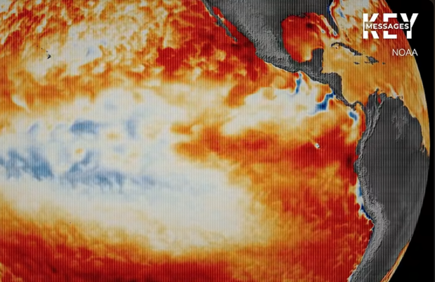

ภาพรวมโลกที่ส่งผลต่อไทย.
ภูมิอากาศ · อาเซียน · การศึกษาไทย · การเงิน · กรุงเทพฯ · ภูมิรัฐศาสตร์โลก · เศรษฐกิจไทย · คณิตศาสตร์ & โมเดลจำลอง — รวมข้อมูลเปิดมาเล่าเป็นภาพ ด้วย Observable Plot + D3 · ทยอยเพิ่มข้อมูลทีละหัวข้อ
แบบจำลองระบบสุริยะ 3 มิติ (3D Solar System Orrery & Comet Halley)
สำรวจระบบสุริยะแบบจำลอง 3 มิติ สมจริงระดับท้องฟ้าจำลอง
WebGL · Three.js 3D · อินเทอร์แอกทีฟแบบจำลองกลศาสตร์ท้องฟ้า 3 มิติ (Orrery) ระดับความละเอียดสูง พร้อมดวงอาทิตย์สังเคราะห์ด้วย Procedural Canvas, ดาวเคราะห์ 8 ดวง + เมฆหมุนวนบนโลก Blue Marble, ดวงจันทร์บริวาร (โลก, พฤหัสบดี, เสาร์), แถบดาวเคราะห์น้อยนับหมื่นดวง และ ดาวหางฮัลเลย์ 3D แท้ ที่หางไอออนทอดยาวหนีดวงอาทิตย์ตามหลักฟิสิกส์ลมสุริยะ
🪐 เปิดแบบจำลองระบบสุริยะ 3 มิติ เต็มหน้าจอ (Fullscreen Edition) คลิกดวงดาวเพื่อเปิดการ์ดข้อมูลดาราศาสตร์ภาษาไทย · หมุน/ซูม 360° · แถบปรับสปีดเวลา Time Warp (1x–100x) · ปรับแสงสว่าง Flare และ Corona สด เปิดเต็มจอ ↗ดวงอาทิตย์ & Corona Glow
Multi-layer Spriteพื้นผิวแมกมาสังเคราะห์ความละเอียดสูง พร้อมเลเยอร์ Corona เต้นเป็นจังหวะ (Breathing Pulse) และแฉกแสง Sunburst 96 ทิศทาง
โลก Blue Marble & เมฆหมุน
NASA Texturesแมตทีเรียลหลายชั้น: Specular Map สะท้อนผิวน้ำทะเล, Normal Map ผิวขรุขระของทวีป, บรรยากาศเมฆหมุนวน และดวงจันทร์ The Moon
ดาวหางฮัลเลย์ 3D
Physics Tail Vectorแกนน้ำแข็ง Nucleus + หมอก Coma เรืองแสง พร้อมหางไอออนสีน้ำเงินครามที่หันหนีออกจากดวงอาทิตย์ตามเวกเตอร์ลมสุริยะตลอดวงโคจร
กาลอวกาศ & หลุมแรงโน้มถ่วง 3 มิติ (Spacetime Curvature & Gravity Well)
มวลสารบอกให้กาลอวกาศโค้งงอ และกาลอวกาศบอกให้มวลสารเคลื่อนที่ (John Wheeler): ในทฤษฎีสัมพัทธภาพทั่วไปของไอน์สไตน์ แรงโน้มถ่วงไม่ใช่แรงดึงดูดล่องหนตามกลศาสตร์ดั้งเดิม แต่เป็นผลจากการที่มวลมหาศาล (ดวงอาทิตย์ และดาวเคราะห์) กดทับโครงข่าย 4 มิติของกาลอวกาศ (Spacetime Fabric) ให้ยุบตัวเป็นหลุมลึก วัตถุบริวารจึงโคจรตามเส้นทางที่สั้นที่สุด (Geodesic) บนระนาบที่โค้งงอนั้น
G_{μν} ไอน์สไตน์เทนเซอร์ (ความโค้งงอของกาลอวกาศ)T_{μν} เทนเซอร์พลังงาน-ความเค้น (การกระจายตัวของมวล/พลังงาน)g, v_e ความเร่งโน้มถ่วงที่พื้นผิว และความเร็วหลุดพ้นจากหลุมแรงโน้มถ่วงแบบจำลองพลวัตแผ่นกาลอวกาศ 3 มิติ (Interactive Spacetime Fabric Grid)
Physics Simulation · 3D Canvasจำลองตารางกริิด 3D ที่บิดเบี้ยวตามมวลของดวงอาทิตย์และดาวเคราะห์ในระบบสุริยะ — ลากเมาส์เพื่อหมุนมุมมอง 3 มิติ หรือหยุดหมุนชั่วคราวได้สด
ความเร่งโน้มถ่วงที่พื้นผิว (Surface Gravity, g)
m/s²เปรียบเทียบแรงโน้มถ่วงที่พื้นผิวดวงดาวในระบบสุริยะ — ดวงอาทิตย์มีค่าสูงสุด 274 m/s² ตามด้วยดาวพฤหัสบดี 24.79 m/s² และโลก 9.81 m/s²
ความเร็วหลุดพ้นจากหลุมแรงโน้มถ่วง (Escape Velocity)
km/sความเร็วขั้นต่ำที่วัตถุต้องใช้เพื่อเอาชนะแรงดึงดูดของหลุมกาลอวกาศและหลุดพ้นสู่อวกาศอันไพศาล ($v_e = \sqrt{2GM/R}$)
เส้นทางจีโอเดสิก (Geodesics)
General Relativityในกาลอวกาศ 4 มิติ ดาวเคราะห์ไม่ได้ถูกดึงดูดด้วยแรงที่มองไม่เห็น แต่กำลังเดินทางเป็น "เส้นทางตรงที่สุด" บนผืนผ้ากาลอวกาศที่ถูกดวงอาทิตย์กดให้โค้งงอ
เวลาชะลอตัวจากความโน้มถ่วง
Gravitational Time Dilationเวลาไม่ได้เดินเร็วเท่ากันทุกที่ในจักรวาล ยิ่งอยู่ใกล้ก้นหลุมแรงโน้มถ่วง (สนามโน้มถ่วงเข้ม) เวลายิ่งเดินช้าลงเมื่อเทียบกับผู้สังเกตการณ์ที่อยู่ห่างไกล
ปรากฏการณ์เลนส์โน้มถ่วง
Gravitational Lensingแสงเดินทางเป็นเส้นตรง แต่เมื่อผ่านผืนกาลอวกาศที่โค้งงอรอบมวลมหาศาล ลำแสงจะหักเหเบี่ยงเบน พิสูจน์โดย เอ็ดดิงตัน ในปี 1919 ยืนยันความถูกต้องของไอน์สไตน์
สนามแม่เหล็ก & เกราะลมสุริยะ (Earth's Magnetosphere & Solar Wind)
เกราะสนามแม่เหล็ก & แรงลอเรนซ์ (Lorentz Force Shield): สนามแม่เหล็กโลกกำเนิดจากการหมุนเวียนพาความร้อนของเหล็กและนิกเกิลหลอมเหลวในแกนนอก (Geodynamo) แผ่เส้นสนามแม่เหล็กคู่ขั้ว (Dipole Lines) ออกสู่อวกาศ อนุภาคมีประจุพลังงานสูงจากลมสุริยะ (โปรตอนและอิเล็กตรอน) เมื่อพุ่งเข้าชนจะถูกแรง $\mathbf{F} = q(\mathbf{v} \times \mathbf{B})$ เบี่ยงเบนทิศทางให้ไหลอ้อมรอบโลก เกิดเป็นโครงสร้างเกราะกัมมันตรังสี แมกนีโตสเฟียร์ (Magnetosphere) ปกป้องสิ่งมีชีวิตและชั้นบรรยากาศไม่ให้ถูกลมสุริยะพัดสูญสิ้นไปเหมือนดาวอังคาร
\mathbf{B} สนามแม่เหล็ก (Magnetic Field Vector, Tesla)q, \mathbf{v} ประจุไฟฟ้าและความเร็วของอนุภาคลมสุริยะ\mathbf{F} แรงลอเรนซ์ที่ผลักเบี่ยงเบนอนุภาคพลาสมาสุริยะแบบจำลอง 3D สนามแม่เหล็กโลก & การเบี่ยงเบนลมสุริยะ (Interactive Magnetosphere & Bow Shock)
Physics Simulation · 3D Particle Systemจำลองเส้นสนามแม่เหล็กคู่ขั้ว (Dipole Lines) รอบโลก, หัวคลื่นกระแทก Bow Shock, แถบรังสี Van Allen และอนุภาคลมสุริยะพลาสมาที่ถูกเบี่ยงเบน — กดปุ่ม "💥 ยิงพายุสุริยะ CME" เพื่อดูการบีบอัดของเกราะแม่เหล็ก
ความเข้มสนามแม่เหล็กที่พื้นผิวดาวเคราะห์ (Surface Field Strength, µT)
µT (Microtesla)เปรียบเทียบความแรงสนามแม่เหล็ก — ดาวพฤหัสบดีมีสนามแม่เหล็กเข้มข้นที่สุดในระบบสุริยะ (428 µT) จากไฮโดรเจนสถานะโลหะเหลว ขณะที่ดาวศุกร์และดาวอังคารแทบไม่มีสนามแม่เหล็กปกป้อง
ความเร็วลมสุริยะตามระยะห่าง (Solar Wind Velocity)
km/sลมสุริยะเร่งความเร็วตั้งแต่ชั้นโคโรนาของดวงอาทิตย์ จนกระทั่งมีความเร็วคงที่ระดับเหนือเสียง (Supersonic ~400–500 km/s) ตลอดพื้นที่ระบบสุริยะ
ไดนาโมในแกนโลก (Geodynamo)
Liquid Iron Outer Coreการหมุนรอบตัวเองของโลกบวกกับการพาความร้อนในแกนนอกที่เป็นเหล็กเหลว ก่อให้เกิดกระแสไฟฟ้าและสนามแม่เหล็กเหนี่ยวนำขนาดยักษ์คอยคุ้มกันโลกตลอด 4 พันล้านปี
แถบรังสีแวนอัลเลน (Van Allen Belts)
Radiation Beltsวงแหวนโดนัท 2 ชั้นรอบโลกที่ดักจับโปรตอนและอิเล็กตรอนพลังงานสูงไม่ให้ตกลงสู่ผิวโลก ชั้นใน (1,000–6,000 กม.) และชั้นนอก (13,000–60,000 กม.)
แสงเหนือ-แสงใต้ (Auroras)
Space Weather Impactอนุภาคสุริยะที่เล็ดลอดตามเส้นสนามแม่เหล็กบริเวณขั้วโลก จะชนกับอะตอมออกซิเจน (เปล่งแสงสีเขียว 557.7 nm / แดง 630 nm) และไนโตรเจน (แสงสีม่วงและฟ้า)
ดวงอาทิตย์ (The Sun · ดาวฤกษ์ศูนย์กลาง)
โครงสร้างชั้นบรรยากาศและภายในดวงอาทิตย์
Astronomy Deep Dive
1. แกนกลาง (Core): แหล่งกำเนิดพลังงานนิวเคลียร์ฟิวชัน โปรตอนหลอมเป็นฮีเลียมที่ความดันและอุณหภูมิ 15 ล้านองศา
2. เขตแผ่รังสี (Radiative Zone): โฟตอนพลังงานสูงเดินทางแบบสุ่ม (Random Walk) ใช้เวลานับแสนปีเพื่อหลุดขึ้นสู่ชั้นบน
3. เขตพาความร้อน (Convection Zone): พลาสมาหมุนวนพาความร้อนขึ้นสู่ผิวหน้า ก่อให้เกิดเซลล์การเดือด (Granulation)
4. ชั้นโฟโตสเฟียร์ (Photosphere): ผิวหน้าที่เปล่งแสงสว่างมองเห็นได้ หนาประมาณ 500 กม.
5. บรรยากาศโคโรนา (Corona): ชั้นบรรยากาศแก๊สร้อนจัดเจือจาง อุณหภูมิสูงทะลุ 1–3 ล้านองศาเซลเซียส
ปรากฏการณ์สุริยะ & อิทธิพลต่อโลก
Space Weather
จุดดับบนดวงอาทิตย์ (Sunspots): บริเวณสนามแม่เหล็กเข้มข้นที่อุณหภูมิต่ำกว่าผิวรอบข้าง มีวัฏจักรเฉลี่ยทุก 11 ปี (Solar Cycle)
การพ่นมวลโคโรนา (Coronal Mass Ejection - CME): กลุ่มก้อนพลาสมาพลังงานสูงที่พุ่งสู่อวกาศ หากพุ่งชนสนามแม่เหล็กโลกจะทำให้เกิด พายุแม่เหล็กโลก (Geomagnetic Storm)
แสงออโรรา (Aurora): แสงเหนือ-แสงใต้ เกิดจากอนุภาคมีประจุจากลมสุริยะชนกับแก๊สออกซิเจนและไนโตรเจนในชั้นบรรยากาศโลก
ดาวเคราะห์ทั้ง 8 ดวง (The 8 Planets)
ตารางเปรียบเทียบข้อมูลดาวเคราะห์ทางดาราศาสตร์
NASA Planetary Fact Sheet| ดาวเคราะห์ | ประเภท | ระยะห่างเฉลี่ย (AU) | เส้นผ่านศูนย์กลาง | คาบโคจร (1 ปี) | อุณหภูมิเฉลี่ย | ดวงจันทร์บริวาร |
|---|---|---|---|---|---|---|
| ☿ ดาวพุธ (Mercury) | ดาวเคราะห์หิน | 0.39 AU (57.9 ล้าน กม.) | 4,879 กม. | 88 วันโลก | 167 °C (-180 ถึง 430) | 0 |
| ♀ ดาวศุกร์ (Venus) | ดาวเคราะห์หิน | 0.72 AU (108.2 ล้าน กม.) | 12,104 กม. | 224.7 วันโลก | 465 °C (ร้อนสุด) | 0 |
| โลก (The Earth) | ดาวเคราะห์หินแห่งชีวิต | 1.00 AU (149.6 ล้าน กม.) | 12,742 กม. | 365.25 วันโลก | 15 °C | 1 ดวง (The Moon) |
| ♂ ดาวอังคาร (Mars) | ดาวเคราะห์หินสีแดง | 1.52 AU (227.9 ล้าน กม.) | 6,779 กม. | 687 วัน (1.88 ปี) | -65 °C | 2 ดวง (Phobos, Deimos) |
| ♃ ดาวพฤหัสบดี (Jupiter) | ดาวเคราะห์แก๊สยักษ์ | 5.20 AU (778.5 ล้าน กม.) | 139,820 กม. (ใหญ่สุด) | 11.86 ปีโลก | -110 °C | 95 ดวง (Galilean 4) |
| ♄ ดาวเสาร์ (Saturn) | แก๊สยักษ์ + วงแหวนสง่างาม | 9.58 AU (1,434 ล้าน กม.) | 116,460 กม. | 29.45 ปีโลก | -140 °C | 146 ดวง (มากที่สุด) |
| ♅ ดาวยูเรนัส (Uranus) | ดาวเคราะห์น้ำแข็งยักษ์ | 19.22 AU (2,871 ล้าน กม.) | 50,724 กม. | 84.01 ปีโลก | -195 °C (หนาวจัด) | 28 ดวง |
| ♆ ดาวเนปจูน (Neptune) | ดาวเคราะห์น้ำแข็งยักษ์ | 30.05 AU (4,495 ล้าน กม.) | 49,244 กม. | 164.8 ปีโลก | -200 °C | 16 ดวง (Triton) |
ดาวหางฮัลเลย์ (1P/Halley · ผู้มาเยือนขอบฟ้า)
กายวิภาคของดาวหาง (Comet Anatomy)
Ion & Dust Tails
1. แกนนิวเคลียส (Nucleus): ก้อนน้ำแข็งสกปรก (Dirty Snowball) ขนาดประมาณ 15 × 8 กม. ประกอบด้วยน้ำแข็งแห้ง มีเทน แอมโมเนีย และฝุ่นซิลิเกต
2. หัวโคม่า (Coma): เมฆหมุนวนของไอแก๊สและฝุ่นที่ระเหิดขึ้นเมื่อเข้าใกล้ความร้อนจากดวงอาทิตย์ สว่างเจิดจ้าเรืองแสง
3. หางไอออน (Ion Tail): แก๊สแตกตัวเป็นประจุสีน้ำเงินคราม ถูกลมสุริยะพัดตรง ชี้หนีออกจากดวงอาทิตย์ 180° เสมอ
4. หางฝุ่น (Dust Tail): อนุภาคฝุ่นสีขาวนวล โค้งตามเส้นทางวงโคจรเนื่องจากแรงดันรังสีแสงอาทิตย์
ประวัติศาสตร์ & การไขความลับจักรวาล
Edmond Halleyในปี ค.ศ. 1705 เอ็ดมันด์ ฮัลเลย์ (Edmond Halley) นักดาราศาสตร์ชาวอังกฤษ ได้ใช้กฎแรงโน้มถ่วงสากลของเซอร์ไอแซก นิวตัน คำนวณพบว่าดาวหางที่ปรากฏในปี 1531, 1607 และ 1682 แท้จริงคือดาวหางดวงเดียวกัน และทำนายว่ามันจะกลับมาอีกครั้งในปี 1758 แม้เขาจะเสียชีวิตก่อน แต่การกลับมาตามนัดทำให้กฎฟิสิกส์ของนิวตันได้รับการยอมรับทั่วโลก
แถบดาวเคราะห์น้อย & วัตถุขอบระบบสุริยะ
แถบดาวเคราะห์น้อยหลัก (Main Asteroid Belt)
เศษซากการกำเนิดดาวเคราะห์เศษหินและโลหะที่หลงเหลือจากการก่อตัวของระบบสุริยะเมื่อ 4.6 พันล้านปีก่อน แรงโน้มถ่วงรบกวนอันมหาศาลของดาวพฤหัสบดีทำให้เศษหินเหล่านี้ไม่สามารถรวมตัวกันกลายเป็นดาวเคราะห์ได้ วัตถุที่สำคัญได้แก่ ดาวเคราะห์แคระซีรีส (Ceres), เวสตา (Vesta), พัลลัส (Pallas) และไฮเจีย (Hygiea)
แถบไคเปอร์ & เมฆออร์ต (Kuiper Belt & Oort Cloud)
แดนน้ำแข็งขอบจักรวาล
แถบไคเปอร์ (30–50 AU): วงแหวนน้ำแข็งและก๊าซเยือกแข็งนอกวงโคจรดาวเนปจูน เป็นที่อยู่ของดาวเคราะห์แคระพลูโต (Pluto), อีริส (Eris), มาเคมาเค (Makemake) และเฮาเมอา (Haumea)
เมฆออร์ต (2,000–100,000 AU): รังไข่ขนาดยักษ์รูปทรงกลมห่อหุ้มระบบสุริยะ มีก้อนน้ำแข็งและฝุ่นนับล้านล้านชิ้น แหล่งกำเนิดดาวหางคาบยาวนับหมื่นปี
มาตราส่วน & ระยะทางดาราศาสตร์ (Astronomical Unit)
หน่วยดาราศาสตร์ (AU): นิยามจากระยะทางเฉลี่ยระหว่างโลกกับดวงอาทิตย์ เพื่อความสะดวกในการคำนวณระยะห่างระดับมหาศาลในอวกาศ แสงจากดวงอาทิตย์ใช้เวลาเดินทางถึงโลกประมาณ 8 นาที 20 วินาที (499 วินาที) และใช้เวลากว่า 4.2 ชั่วโมง เพื่อเดินทางถึงดาวเนปจูน
ระยะทางเฉลี่ยจากดวงอาทิตย์ (หน่วย AU)
มาตราส่วนระยะทางเปรียบเทียบระยะห่างในระบบสุริยะ (1 AU = 149.6 ล้านกิโลเมตร) — สังเกตว่าระบบสุริยะชั้นนอกมีระยะห่างกว้างใหญ่กว่าชั้นในอย่างมหาศาล
เปรียบเทียบขนาดเส้นผ่านศูนย์กลาง (กิโลเมตร)
ขนาดดาวเคราะห์เส้นผ่านศูนย์กลางของดาวเคราะห์ 8 ดวง เรียงจากดาวพุธขนาดเล็กสุด ไปจนถึงดาวพฤหัสบดีและดาวเสาร์ที่เป็นแก๊สยักษ์
แผนที่โลกร้อนไล่ปี 1880–2025 (NASA)
ส่วนต่างอุณหภูมิพื้นผิวโลก — ไล่ปี
เล่นได้ · ไล่ปีกด เล่น ให้แผนที่ไล่ปีเอง หรือลากสไลเดอร์ · กด “⇄ เทียบ 2 ปี” วางแผนที่ปี 1880 เทียบปีปัจจุบันซ้าย-ขวา · “⛶ เต็มจอ” ดูแบบไม่มีเมนูบัง · ชี้จุดใดบนแผนที่เพื่อดูค่า · หมุดฟ้า = ไทย
“◍ เติมช่องว่าง” (เปิดไว้ก่อน) — ปีเก่า ๆ NASA ยังตรวจวัดไม่ทั่วโลก ช่องที่ไม่มีข้อมูลจึงถูกเติมด้วยค่าประมาณจากช่องข้างเคียง (ชี้แล้วจะขึ้น ≈ กำกับ) กดปิดเพื่อดูว่าปีนั้นมีข้อมูลจริงแค่ไหน — สีเทาคือช่องที่ไม่มีข้อมูล
เส้นเวลาอุณหภูมิเฉลี่ยทั้งโลก
คลิกแถบสีเพื่อกระโดดไปปีนั้นหมายเหตุ: ค่าเฉลี่ยทั้งโลกแกว่งอยู่ราว −0.5 ถึง +1.3°C เท่านั้น แถบสีและแท่งกราฟในส่วนนี้จึงใช้สเกลสีที่เข้มกว่าแผนที่ (ให้ +1.3°C = แดงเข้มสุด) เพื่อให้เห็นความต่างระหว่างปีชัดขึ้น · คำนวณจากข้อมูลจริงเท่านั้น ไม่นับช่องที่เติมค่าประมาณ
ข้อมูลนี้มาจากไหน
- ไฟล์ต้นทางคือ
gistemp1200_GHCNv4_ERSSTv5.ncของ NASA GISS — อุณหภูมิส่วนต่าง (anomaly) รายเดือน บนกริด 2°×2° ตั้งแต่ ค.ศ. 1880 - ผสมข้อมูลสถานีตรวจอากาศบนบก (GHCN v4) กับอุณหภูมิผิวน้ำทะเล (ERSST v5) และเกลี่ยเชิงพื้นที่รัศมี 1,200 กม.
- “ส่วนต่าง” หมายถึงต่างจากค่าเฉลี่ยของจุดนั้นเองในช่วงปี 1951–1980 ไม่ใช่อุณหภูมิสัมบูรณ์
วิธีประมวลผลในแผงนี้
- เฉลี่ยรายเดือน → รายปี เฉพาะจุดกริดที่มีข้อมูลอย่างน้อย 6 เดือนในปีนั้น จุดที่ข้อมูลไม่พอจะแสดงเป็นช่องว่าง
- แสดงเฉพาะปีที่มีข้อมูลครบ 12 เดือน (ปีล่าสุดที่ยังไม่ครบปีจะถูกตัดออก)
- เก็บค่าเป็นจำนวนเต็ม 1 ไบต์ (ละเอียด 0.1°C) เพื่อให้ไฟล์เล็กพอโหลดผ่านเว็บ
- ค่าเฉลี่ยโลกคำนวณแบบถ่วงน้ำหนักตามพื้นที่ (cos ละติจูด) ได้ผลตรงกับตัวเลขที่ NASA ประกาศในระดับ ±0.03°C
- เติมช่องว่าง (เปิดไว้เป็นค่าเริ่มต้น) — ช่องที่ NASA ไม่มีข้อมูล จะถูกไล่เติมด้วยค่าเฉลี่ยของช่องข้างเคียงทีละวงจนเต็ม เป็นค่าประมาณเชิงพื้นที่ ไม่ใช่ค่าที่วัดได้จริง · ชี้ที่แผนที่จะเห็นเครื่องหมาย ≈ กำกับ และปุ่มในแถบเครื่องมือปิดโหมดนี้ได้ตลอด
- ตัวเลขในการ์ด (ทั้งโลก · อาร์กติก · ไทย) กับกราฟและแถบสีรายปีด้านบน คำนวณจากข้อมูลจริงเท่านั้น ไม่นับค่าที่เติมเข้าไป
ภาพรวม โลกร้อน & ภัยพิบัติ
ตัวชี้วัดระบบโลก 4 ตัว
สรุปรวม · สดสี่เส้นที่บอกอาการของโลกทั้งใบในที่เดียว — ก๊าซที่เราเติมเข้าไป (CO₂) · ความร้อนที่โลกเก็บไว้ (อุณหภูมิ) · และผลที่ตามมาสองอย่าง (น้ำทะเลสูงขึ้น · น้ำแข็งหด) · กด “ดูเต็ม →” เพื่อกระโดดไปกราฟใหญ่ของตัวชี้วัดนั้น
อุณหภูมิเฉลี่ยโลกที่สูงขึ้น
เส้นเวลา · สดค่าผิดปกติของอุณหภูมิเฉลี่ยพื้นผิวโลก (เทียบค่าเฉลี่ยปลายคริสต์ศตวรรษที่ 19) — แนวโน้มร้อนขึ้นชัดเจนตั้งแต่ปี 1980
ภัยพิบัติแยกประเภท
เฉลี่ยต่อปีจำนวนเหตุภัยพิบัติธรรมชาติทั่วโลกเฉลี่ยต่อปี (ทศวรรษ 2010s) — น้ำท่วมและพายุครองสัดส่วนสูงสุด
เส้นคีลลิง — CO₂ ในบรรยากาศ
รายเดือน · สดความเข้มข้นคาร์บอนไดออกไซด์ในอากาศที่หอสังเกตการณ์เมานาโลอา ฮาวาย — วัดต่อเนื่องตั้งแต่ปี 1958 โดยชาร์ลส์ ดี. คีลลิง เป็นชุดข้อมูลที่ชี้ขาดว่ามนุษย์กำลังเปลี่ยนองค์ประกอบบรรยากาศจริง · ฟันเลื่อยเล็ก ๆ คือลมหายใจของโลก (ป่าซีกโลกเหนือดูดคาร์บอนช่วงฤดูร้อน แล้วคายคืนช่วงฤดูหนาว) แต่เส้นรวมไต่ขึ้นทุกปี ไม่เคยลง
แผนที่การปล่อย CO₂ ทั่วโลก — ไล่ปี
เล่นได้ · ไล่ปีเลือกตัวชี้วัด แล้วกด เล่น ให้แผนที่ไล่ปีเอง หรือลากสไลเดอร์ · กด “⇄ เทียบ 2 ปี” วางแผนที่ปีเริ่มต้นเทียบปีปัจจุบันซ้าย-ขวา · ชี้ประเทศเพื่อดูค่า · ไทยขอบทอง
เอลนีโญ–ลานีญา (ENSO) & ผลต่อไทย
เหตุการณ์เอลนีโญ–ลานีญาที่แรงที่สุดตั้งแต่ปี 2493
ONI สูงสุดของแต่ละเหตุการณ์ · °CENSO วัดด้วย ONI (Oceanic Niño Index) — ค่าผิดปกติของอุณหภูมิผิวน้ำทะเลกลางแปซิฟิกเขตศูนย์สูตร (พื้นที่ Niño 3.4) เฉลี่ยครั้งละ 3 เดือน · เกิน +0.5°C = เอลนีโญ (ทะเลอุ่นผิดปกติ · แท่งส้ม) ต่ำกว่า −0.5°C = ลานีญา (เย็นผิดปกติ · แท่งฟ้า) · ภาพดาวเทียมของ NOAA ที่เห็นเป็นแถบแดงยาวพาดตามแนวศูนย์สูตร คือค่าเดียวกันนี้ในรูปแผนที่
อุณหภูมิเฉลี่ยผิวโลก — ค่าเฉลี่ยรายทศวรรษ (NASA GISTEMP)
°C เทียบฐาน 2494–2523คนละชุดกับกราฟ “อุณหภูมิเฉลี่ยโลกที่สูงขึ้น” ด้านบนในข้อเดียวกันนี้ (นั่นคือ HadCRUT5 เทียบยุคก่อนอุตสาหกรรม · ดึงสด) — ชุดนี้คือ GISTEMP ของ NASA Goddard เทียบฐาน 2494–2523 ซึ่งเป็นชุดข้อมูลเบื้องหลังภาพเคลื่อนไหวแผนที่โลกแดง–ฟ้าที่เห็นกันบ่อย · ENSO ไม่ได้ทำให้โลกร้อนขึ้นในระยะยาว แต่ทำให้ปีไหนขึ้นแท่นปีร้อนสถิติ — ปีที่ร้อนทำลายสถิติมักเป็นปีถัดจากช่วงที่เอลนีโญขึ้นสูงสุด
ENSO กับภัยพิบัติในไทย — เทียบรายเหตุการณ์
2540–2570กรมอุตุนิยมวิทยาสรุปหลักไว้ว่า ปีที่เอลนีโญรุนแรง ฝนของไทยมักต่ำกว่าปกติและอุณหภูมิสูงกว่าปกติ ส่วนลานีญาให้ผลตรงข้าม — ตารางนี้วางเหตุการณ์จริงในไทยเทียบกับค่า ONI ของแต่ละรอบ · แถวสุดท้ายเป็นการคาดการณ์ ยังไม่ใช่สิ่งที่เกิดขึ้นแล้ว
| กำลังสร้างตาราง… |
จากมหาสมุทรถึงโดมความร้อน — กลไก 4 ขั้น
อธิบายกลไกแผนที่อากาศที่เห็นเป็นวงความกดอากาศซ้อนกันเป็นชั้น ๆ รอบตัวอักษร H คือ “ความกดอากาศสูงปิดกั้น” (blocking high) — ตัวกลางที่แปลงความผิดปกติของอุณหภูมิมหาสมุทร ให้กลายเป็นคลื่นความร้อนและภัยแล้งบนแผ่นดินจริง ๆ
| กำลังสร้างตาราง… |
แหล่งอ้างอิงของหัวข้อนี้
เปิดทั้งหมด · ไม่ต้องใช้ API keyทุกตัวเลขในหัวข้อนี้ระบุหน่วยงานเจ้าของข้อมูลและปีข้อมูลกำกับไว้ — ตัวเลขที่ไม่บอกปี คือทางที่ข้อมูลเก่าถูกนำมาสวมเป็นปัจจุบัน
| หน่วยงาน · แหล่งข้อมูล | สถานะ | ใช้กับตัวเลขไหนในหน้านี้ | ปีข้อมูล |
|---|---|---|---|
| NOAA CPC | จริง | Oceanic Niño Index (ONI) ↗ค่า ONI สูงสุดของ 10 เหตุการณ์ในกราฟแท่ง · เกณฑ์ ±0.5°C | 2493–2568 |
| NOAA CPC | จริง | ประกาศเปลี่ยนไปใช้ RONI ↗การเปลี่ยนดัชนีทางการเมื่อ ก.พ. 2569 และเกณฑ์ RONI ±0.5°C | 2569 |
| NOAA CPC | คาดการณ์ | ENSO Diagnostic Discussion ↗สถานะ El Niño Advisory · โอกาส 95% ที่จะแรงมากช่วง ต.ค.–ธ.ค. 2569 · โอกาส 69% ที่ RONI ≥ +2.5°C | ส.ค. 2569 |
| NASA GISS | จริง | GISTEMP v4 ↗อุณหภูมิเฉลี่ยผิวโลกเทียบฐาน 2494–2523 — ค่ารายปี 2567 (+1.28°C) และ 2568 (+1.19°C) | 2423–2568 |
| NASA Goddard SVS | อิงจริง | Global Temperature Anomalies 1880–2025 ↗ภาพเคลื่อนไหวแผนที่อุณหภูมิผิดปกติของโลก — ที่มาของกราฟค่าเฉลี่ยรายทศวรรษ (สรุปเป็นค่าประมาณ) | 2569 |
| กรมอุตุนิยมวิทยา | จริง | เอลนีโญและลานีญา ↗นิยามปรากฏการณ์ และหลักที่ว่าเอลนีโญรุนแรง = ฝนไทยต่ำกว่าปกติ อุณหภูมิสูงกว่าปกติ | — |
| สส. (กรมการเปลี่ยนแปลงสภาพภูมิอากาศฯ) | คาดการณ์ | แจ้งเตือนรับมือเอลนีโญลากยาวถึงปี 2570 ↗คำเตือนระดับกระทรวงและการเปิดฐานข้อมูลภูมิอากาศความละเอียดสูงเพื่อรับมือภัยแล้ง | 2569 |
หัวข้อนี้เป็นข้อมูลเพื่อการศึกษา ไม่ใช่ประกาศเตือนภัยทางการ — การเตือนภัยจริงให้ยึดประกาศของกรมอุตุนิยมวิทยา และกรมป้องกันและบรรเทาสาธารณภัย (ปภ.) เป็นหลัก
เศรษฐกิจอาเซียน
🟦 ขนาดเศรษฐกิจ (GDP)
Treemapมูลค่า GDP ของแต่ละชาติอาเซียน — พื้นที่ยิ่งใหญ่ เศรษฐกิจยิ่งใหญ่ (อินโดนีเซียครองแชมป์ ไทยตามมา)
GDP ต่อหัวประชากร
เทียบประเทศรายได้เฉลี่ยต่อคน (US$) — สิงคโปร์/บรูไนนำห่าง ไทยอยู่กลางตาราง (แท่งส้ม = ไทย)
การเติบโตทางเศรษฐกิจ
2010–ปัจจุบันอัตราการเติบโต GDP รายปี (%) ของทั้ง 10 ชาติ — เห็น “หลุมปี 2020” จากโควิดชัดเจน · เส้นหนา = ไทย
แผนที่ภูมิภาคอาเซียน
GDP ต่อหัวระบายสีตาม GDP ต่อหัว เข้มยิ่งรวย — ไฮไลต์ประเทศไทยเส้นทอง
การคอร์รัปชันในอาเซียน
คะแนน CPI 10 ชาติ
ปี 2568สิงคโปร์โปร่งใสติดอันดับ 3 ของโลก ขณะที่เมียนมารั้งท้ายภูมิภาค — เส้นประ = ค่าเฉลี่ยโลก (42) · แท่งส้ม = ไทย
อันดับโลก
จาก 182 ประเทศตำแหน่งบนเวทีโลก — จุดยิ่งอยู่ซ้าย (เลขน้อย) ยิ่งโปร่งใส · สิงคโปร์ #3 vs เมียนมา #169
แผนที่ความโปร่งใสอาเซียน
คะแนน CPIระบายสีตามคะแนน CPI — เขียวยิ่งเข้มยิ่งโปร่งใส ส้มแดงคือพื้นที่ทุจริตสูง · ไฮไลต์ไทยเส้นทอง
อาวุธทางการทหารอาเซียน
งบประมาณกลาโหม
พันล้าน US$สิงคโปร์เล็กแต่ทุ่มหนักสุดในภูมิภาค — มากกว่าไทยเกือบ 3 เท่า · แท่งส้ม = ไทย
กำลังพลประจำการ
ทหารประจำการเวียดนามมีทหารประจำการมากสุด ตามด้วยอินโดนีเซียและไทย · แท่งส้ม = ไทย
อันดับแสนยานุภาพโลก (PwrIndx)
GFP 2026ยิ่งจุดอยู่ซ้าย (อันดับเลขน้อย) ยิ่งแข็งแกร่ง — อินโดนีเซีย #13 นำโด่งในอาเซียน · บรูไนไม่ถูกจัดอันดับ · จุดส้ม = ไทย
ภูมิศาสตร์อาเซียน
🟩 ขนาดพื้นที่ประเทศ
Treemapอินโดนีเซียกินพื้นที่เกือบครึ่งภูมิภาค — สิงคโปร์เล็กจนแทบมองไม่เห็น (735 ตร.กม.)
ความหนาแน่นประชากร
คน/ตร.กม.สิงคโปร์อัดแน่นสุดขั้วราว 8,000 คน/ตร.กม. ขณะที่ลาวโปร่งสุดในภูมิภาค · แท่งส้ม = ไทย
แผนที่ภูมิภาค + เมืองหลวง
10 ชาติระบายสีตามขนาดพื้นที่ พร้อมหมุดทอง = ที่ตั้งเมืองหลวงของแต่ละชาติ · ไฮไลต์ไทยเส้นทอง
ข้อมูลพื้นฐานรายประเทศ
ตารางรวมพื้นที่ · เมืองหลวง · ประชากรล่าสุด (World Bank) · ปีที่เข้าเป็นสมาชิกอาเซียน — แถวเขียว = ไทย
เศรษฐกิจดิจิทัลอาเซียน
ลูกโลกเศรษฐกิจดิจิทัลอาเซียน 3 มิติ
3D · แท่งยื่น · ลาก/ซูมได้แท่งที่ยื่นจากผิวโลก = ขนาดเศรษฐกิจดิจิทัลของแต่ละชาติ (GMV มูลค่าซื้อขายรวม) · แท่งสีทอง = ประเทศไทย (46 พันล้าน) อันดับ 2 ของภูมิภาค · แท่งอินโดนีเซียสูงเด่นเพราะประชากร 280 ล้านคนเพิ่งเข้าสู่โลกออนไลน์เต็มตัว · หมุนดูจะเห็นว่าเศรษฐกิจดิจิทัลกระจุกอยู่ใน 6 ชาติหลักของอาเซียน · ลากเพื่อหมุน · สกอลล์เพื่อซูม
เศรษฐกิจดิจิทัลอาเซียนโตทะยาน
GMV รวม SEA-6มูลค่ารวมของทั้ง 6 ชาติหลัก (GMV พันล้าน US$) — เติบโตต่อเนื่องแม้ผ่านโควิด และตั้งเป้าแตะ 600 พันล้าน US$ ภายในปี 2573 · เส้นประ = ช่วงคาดการณ์
ผู้ใช้อินเทอร์เน็ตรายประเทศ
ต้นปี 2567 · ล้านคนอินโดนีเซียมีชาวเน็ตมากกว่าประชากรทั้งประเทศไทยเกือบ 3 เท่า — ฐานผู้ใช้มหาศาลนี้คือเชื้อเพลิงของเศรษฐกิจดิจิทัล · แท่งแดง = ไทย
ไฟฟ้า
การผลิตไฟฟ้าของไทยแยกตามเชื้อเพลิง
TWh · สดก๊าซธรรมชาติคือกระดูกสันหลังของระบบไฟฟ้าไทยมาตลอด — พลังงานหมุนเวียนและไฟนำเข้า (พลังน้ำจากลาว) โตขึ้นชัดในทศวรรษหลัง
กำลังผลิตแยกตามผู้ผลิต
MWโรงไฟฟ้าเอกชนรายใหญ่ (IPP) แซง กฟผ. ไปแล้ว — รวมรายเล็ก SPP และไฟนำเข้าจากเพื่อนบ้านอีกราว 29%
สัดส่วนเชื้อเพลิงปีล่าสุด
Sunburst · %ซันเบิสต์ 2 วง — วงในคือกลุ่มเชื้อเพลิง (ฟอสซิล/หมุนเวียน/อื่นๆ) วงนอกแยกชนิด · ชี้เมาส์เพื่อดูสัดส่วน — ไทยยังพึ่งพาฟอสซิลรวมกันเกิน 2 ใน 3 ของไฟฟ้าที่ผลิตได้
พลังงานหมุนเวียน & ราคาที่จ่ายจริง
ลูกโลกพลังงานสะอาด 3 มิติ
3D · แท่งยื่น · ลาก/ซูมได้แท่งที่ยื่นจากผิวโลก = สัดส่วนไฟฟ้าที่มาจากพลังงานหมุนเวียนของประเทศนั้น · แท่งสีทอง = ประเทศไทย (18.1%) เตี้ยติดพื้น ขณะที่ยุโรปเหนือกับบราซิลยื่นสูงเกือบสุด · หมุนดูจะเห็นว่าประเทศที่ไฟเกือบทั้งหมดสะอาดแล้ว (ไอซ์แลนด์ นอร์เวย์ บราซิล) ทำได้เพราะมีพลังน้ำ/ความร้อนใต้พิภพมหาศาล ส่วนไทยยังพึ่งก๊าซนำเข้า · ลากเพื่อหมุน · สกอลล์เพื่อซูม
ไฟฟ้าสะอาดของไทยมาจากไหน
2566 · % ของไฟทั้งหมด"พลังงานหมุนเวียน" ก้อนใหญ่สุดของไทยจริงๆ คือ พลังน้ำที่นำเข้าจากลาว ไม่ใช่แดดหรือลมในบ้านเรา — แสงอาทิตย์กับลมรวมกันยังผลิตไฟได้แค่ราว 5% ทั้งที่ไทยแดดจัดเกือบทั้งปี
ราคาน้ำมันหน้าปั๊มที่คนไทยจ่ายจริง
9 ก.ค. 2569 · บาท/ลิตรราคาขายปลีกจริงหน้าปั๊ม (ปตท./บางจาก) — เชื้อเพลิงที่ผสมเอทานอล/ไบโอดีเซลมาก (E85, E20, B20) ถูกกว่าเบนซินล้วนชัดเจน เพราะรัฐอุดหนุนผ่านกองทุนน้ำมันเพื่อดึงราคาลง
น้ำประปา
การเข้าถึงน้ำดื่มขั้นพื้นฐานในอาเซียน
% ประชากร · สดไทยกับสิงคโปร์อยู่กลุ่มนำที่เกือบ 100% — ประเทศเพื่อนบ้าน CLMV ยังมีช่องว่างให้ไล่ตาม · แท่งทอง = ไทย
กำลังผลิตโรงงานผลิตน้ำ กปน.
ล้าน ลบ.ม./วันบางเขนแบกเกินครึ่งของระบบ — น้ำดิบหลักมาจากเจ้าพระยา (ฝั่งตะวันออก) และแม่กลองผ่านคลองมหาสวัสดิ์ (ฝั่งตะวันตก)
แร่
ผลผลิตแร่สำคัญของไทย
ล้านตัน/ปีหินปูน–หินอุตสาหกรรมคือแร่ปริมาณมหาศาลที่สุด (ป้อนอุตสาหกรรมซีเมนต์และก่อสร้าง) — แกนนอนย่อแบบรากที่สองเพื่อให้เห็นแร่ตัวเล็กด้วย
สัดส่วนมูลค่าการผลิตแร่
% โดยประมาณหินอุตสาหกรรมกับลิกไนต์กินมูลค่ารวมกันราว 6 ใน 10 — ทองคำกลับมามีบทบาทหลังเหมืองชาตรีเปิดอีกครั้ง
น้ำมัน
ราคาน้ำมันดิบโลกย้อนหลัง
US$/บาร์เรล · สดเห็นครบทุกช็อก — วิกฤตน้ำมันปี 2516/2522 · พีค 147$ ปี 2551 · ราคาติดลบช่วงโควิด 2563 · พุ่งอีกครั้งหลังสงครามยูเครน 2565 · เส้นแดง=ราคาจริง แถบเขียว=ค่าเฉลี่ยเคลื่อนที่ ±1.5 SD
กำลังการกลั่นรายโรงกลั่น
พันบาร์เรล/วันเกือบทั้งหมดกระจุกอยู่ระเบียงตะวันออก (ระยอง–ศรีราชา) — เหลือบางจากพระโขนงแห่งเดียวใน กทม.
การจัดหาน้ำมันดิบของไทย
สัดส่วนแหล่งในประเทศ (สิริกิติ์ ฝาง และแหล่งอ่าวไทย) ตอบโจทย์ได้ราว 1 ใน 10 — ที่เหลือนำเข้า โดยเฉพาะจากตะวันออกกลาง
เส้นทางคมนาคมทางทะเลและสายเคเบิลใต้สมุทรโลก
ลากเพื่อหมุนลูกโลก · ล้อเมาส์หรือปุ่ม เพื่อซูม (⌂ = รีเซ็ต) · กดปุ่มสลับ 2D–3D · เส้นด้านหลังโลกถูกบังแล้วโผล่กลับเองเมื่อหมุน — แสดงข้อมูลโครงสร้างพื้นฐานโลก: เส้นทึบหนา (สีเขียว/ส้ม/แดง) = เส้นทางเดินเรือคอนเทนเนอร์หลัก (สีตามสภาวะค่าระวาง) · เส้นสีต่าง ๆ = สายเคเบิลใต้ทะเลจริงทั่วโลก 797 สาย (ข้อมูล TeleGeography · สีตามผู้ให้บริการ) · เส้นเน้นหนา = 16 สายที่ขึ้นฝั่งไทย (ชี้ที่เส้นเพื่อดูชื่อสาย) · จุดม่วงเล็ก = จุดขึ้นฝั่งเคเบิล 636 จุด (จุดใหญ่ = จุดขึ้นฝั่งไทย) · จุดวงกลมขาว = ท่าเรือ (จุดฟ้า = แหลมฉบัง) · จุดเหลี่ยมแดง = จุดคอขวดทางทะเล
ดัชนี Drewry World Container Index (WCI) แสดงค่าระวางขนส่งตู้ขนาด 40 ฟุต (ปี 2566 - 2569) สะท้อนความตึงตัวจากวิกฤตความมั่นคงทะเลแดงในปลายปี 2566/2567 ที่ทำให้ตู้เรือสูงขึ้นเกือบ 3 เท่าตัว
เดโมเทคนิค: การจัดกลุ่มเส้น (Edge-Bundling) ที่จุดเชื่อมเส้นทาง
Interactive · Observableเอนจินจริงเบื้องหลังการวาด “เส้นทางมัดรวม” สไตล์แผนที่รถไฟฟ้า — พอร์ตเต็ม (โค้ดจริง) จากโน้ตบุ๊ก Observable ↗ ของ Cato Institute · ลากป้ายโหนด/เส้น เพื่อจัดลำดับการมัดเส้นใหม่ · สลับโหมด straight/curved ได้ · (ป้ายในวิดเจ็ตเป็นภาษาอังกฤษตามต้นฉบับ)
junction1/junction2 ผ่าน @observablehq/runtime · โมดูลเก็บออฟไลน์ที่ stats/junction-notebook.js (คำนวณเฉพาะ 2 เซลล์นี้ + dependency ไม่แตะข้อมูล Jones Act)การค้าระหว่างประเทศของไทย (ในบริบทโลก)
การค้า · Interactiveโครงสร้างการส่งออก คู่ค้า ฤดูกาล ความตกลงการค้าเสรี และดุลการค้าของไทย — รูปแบบภาพจากโน้ตบุ๊ก Observable ปรับใส่ข้อมูลจริงโดยประมาณ (กระทรวงพาณิชย์ / กรมศุลกากร / WTO)
เส้นทางมูลค่าส่งออกไทย หมวดสินค้า → ภูมิภาคปลายทาง → ประเทศคู่ค้า (โดยประมาณ ปี 2566 · หน่วยพันล้าน US$) · ความหนาเส้น = มูลค่า · ชี้ที่เส้น/กล่องเพื่อดูตัวเลข
แผนที่การผลิตพลังงาน & ทรัพยากร
แหล่งผลิตไฟฟ้า น้ำมัน น้ำประปา และแร่ ทั่วไทย
— จุดจุดสีตามประเภทบนแผนที่ 77 จังหวัด — แตะป้ายหมวดเพื่อเปิด/ปิด · ชี้หรือแตะจุดเพื่อดูรายละเอียด · ตำแหน่งเป็นค่าโดยประมาณระดับจังหวัด
แผนที่แหล่งพลังงานบนแผนที่จริง (ซูม/ลากได้)
Interactive · Carto tilesลากเพื่อเลื่อน · เลื่อนล้อ/แตะสองนิ้วเพื่อซูม — หมุดสีตามประเภทแหล่งพลังงาน (ชี้เพื่อดูชื่อ) วางบนแผนที่จริง · ไทล์ปรับตามธีมสว่าง/มืดอัตโนมัติ
% การละลายน้ำแข็งโลก
น้ำแข็งทะเลอาร์กติก (ต่ำสุด/สูงสุดรายปี)
ขอบเขตน้ำแข็งทะเลอาร์กติกรายปี — จุดต่ำสุดปลายฤดูร้อน (ก.ย.) ลดลงชัดเจนกว่าจุดสูงสุด (มี.ค.)
จุดต่ำสุดประจำปี (ก.ย.) ล่าสุด ปี —
เทียบจุดต่ำสุดปีแรกของสถิติดาวเทียม
เฉลี่ยต่อปี (2002–2023 · GRACE)
เฉลี่ยต่อปี (2002–2023 · GRACE)
การสูญเสียมวลแผ่นน้ำแข็ง
มวลน้ำแข็งที่หายไปเฉลี่ยต่อปี (กิกะตัน) จากดาวเทียม GRACE / GRACE-FO — เป็นตัวขับเคลื่อนหลักของระดับน้ำทะเลที่สูงขึ้น
ประเทศเสี่ยงจมน้ำ
ระดับน้ำทะเลเฉลี่ยของโลก
1880–ปัจจุบัน · สดการเปลี่ยนแปลงระดับน้ำทะเลเฉลี่ยทั่วโลก (มม. เทียบฐาน) — สูงขึ้นต่อเนื่องและเร่งตัวหลังปี 1990 จากยุคดาวเทียม
ประชากรเสี่ยงน้ำท่วมชายฝั่ง ภายในปี 2050
รายประเทศจำนวนประชากรที่จะอยู่ในเขตเสี่ยงน้ำท่วมชายฝั่งรายปี ภายในปี ค.ศ. 2050 (แท่งส้ม = ไทย) — เอเชียรับความเสี่ยงสูงสุดของโลก
คลื่นความร้อน
แผนที่อุณหภูมิพื้นผิวโลก (2 เมตร) — ล่าสุด
GFS เรียลไทม์ · สดอุณหภูมิอากาศที่ระดับ 2 เมตรทั่วโลกในขณะนี้ (ไล่สีต่อเนื่อง น้ำเงิน=หนาว → แดง=ร้อน) — สไตล์เดียวกับ ClimateReanalyzer สร้างจากกริด 612 จุดทั่วโลก
จำนวนวันร้อนจัด (≥35°C) ต่อปี
แนวโน้ม · สดจำนวนวันที่อุณหภูมิสูงสุด ≥ 35°C ในกรุงเทพฯ แต่ละปี — ยิ่งสูง ยิ่งบ่งชี้คลื่นความร้อนบ่อยและยาวนานขึ้น
เอลนีโญ & ลานีญา (ENSO 3D Dynamics)
แบบจำลอง 3 มิติการกระจายอุณหภูมิผิวน้ำทะเล (ENSO SST Anomaly)
ข้อมูลจริง GISTEMP/ERSSTv5 · WebGL 3Dระบายด้วยค่าที่วัดได้จริงรายปี ไม่ใช่ภาพจำลอง — ส่วนต่างอุณหภูมิผิวน้ำทะเล (SST Anomaly) จากกริด NASA GISTEMP v4 ซึ่งส่วนพื้นน้ำคือชุด ERSSTv5 ของ NOAA · หมุนลูกโลกสำรวจแปซิฟิก แล้วเลื่อนไทม์ไลน์ไล่ปี 2423–2568 (ค.ศ. 1880–2025) เพื่อดูลิ้นน้ำเย็น–มวลน้ำร้อนสลับกันจริงตามประวัติศาสตร์ · ค่าเริ่มต้นเปิดโหมด “หักแนวโน้มโลกร้อนออก” ไว้ เพราะถ้าดูค่าดิบ ปีหลัง ค.ศ. 2000 จะแดงเกือบทั้งมหาสมุทรจนแยกเอลนีโญ–ลานีญาไม่ออก (กดปุ่มในแผงเพื่อสลับดูค่าดิบได้)
🌍 SST Anomaly · ข้อมูลจริงรายปี
ส่วนต่างอุณหภูมิผิวน้ำทะเลจากกริด NASA GISTEMP v4 (พื้นน้ำ = NOAA ERSSTv5) · ระบายเฉพาะผืนน้ำ พื้นดินแสดงเป็นภาพเทา
—
เปรียบเทียบกับภาพถ่ายดาวเทียมจริงจาก NOAA (Equatorial Pacific SST Anomaly)
NOAA Key Messages · อ้างอิงสถิติจริง
NOAA Satellite SSTการตรวจวัดอุณหภูมิผิวน้ำทะเลจริง (Equatorial Cold & Warm Tongue)
ภาพดาวเทียมของ NOAA แสดงพื้นที่ มหาสมุทรแปซิฟิกแถบศูนย์สูตร (Equatorial Pacific) บริเวณนอกชายฝั่งทวีปอเมริกาใต้ (เปรู, เอกวาดอร์, อเมริกากลาง) สังเกต "ลิ้นน้ำเย็น (Cold Tongue)" สีฟ้า-ขาวที่ทอดยาวเป็นแนวนอนไปทางทิศตะวันตกตามเส้นศูนย์สูตร ซึ่งถูกขนาบด้วยมวลน้ำอุ่นสีส้ม-แดง
ต่างจากลูกโลกด้านบนตรงไหน: ภาพนี้เป็นภาพถ่ายดาวเทียมความละเอียดสูงของช่วงเวลาเดียว ส่วนลูกโลกด้านบนคือกริดวิเคราะห์ย้อนหลัง (GISTEMP v4 / ERSSTv5) ที่หยาบกว่ามาก — ช่องละ 2°×2° และเป็นค่าเฉลี่ยทั้งปี จึงเห็นเป็นปื้นนุ่ม ๆ ไม่เห็นริ้วกระแสน้ำย่อย แต่แลกมากับการที่ไล่ดูได้ยาวถึง 146 ปี
จุดสังเกตสำคัญ: ลิ้นน้ำเย็นนี้เกิดขึ้นจากการที่ลมสินค้าพัดพามวลน้ำอุ่นไปทางทิศตะวันตก และเหนี่ยวนำให้เกิดน้ำผุดเย็นลึก (Upwelling) อุดมด้วยสารอาหารขึ้นมาจากใต้ทะเลเปรู เมื่อเกิดเอลนีโญ ลิ้นน้ำเย็นนี้จะหายไปและถูกแทนที่ด้วยมวลน้ำร้อนจัด ส่งผลกระทบต่อสภาพอากาศโลกทันที
ฝุ่น PM2.5
แผนที่ PM2.5 ทั่วโลก — ล่าสุด
CAMS เรียลไทม์ · สดความเข้มข้นฝุ่น PM2.5 ทั่วโลกในขณะนี้ (ไล่สีต่อเนื่องตามเกณฑ์ AQI) — เห็นแหล่งฝุ่นใหญ่ เช่น เอเชียใต้/ตะวันออก · สร้างจากกริดทั่วโลก
PM2.5 รายวัน — เชียงใหม่ vs กรุงเทพฯ
รายวัน · สดค่าเฉลี่ยฝุ่น PM2.5 รายวัน — เห็น "ฤดูฝุ่น" ม.ค.–เม.ย. จากการเผาในภาคเหนือชัดเจน (เส้นประ = มาตรฐานไทย 37.5 / WHO 15)
วงโคจรดาวเทียม (Ground Track)
ทำไมเส้นทางดาวเทียมถึงเป็น "คลื่น"?
อินเทอร์แอกทีฟ · จำลองจริงเคยเห็นเส้นทางดาวเทียม (ground track) บนแผนที่แล้วงงไหมว่าทำไมมันหยึกหยักเป็นคลื่น? จริงๆ ดาวเทียมไม่ได้ส่ายไปมา — มันโคจรเป็น "วงกลม" ที่แทบไม่ต้องบังคับเลย เส้นคลื่นที่เห็นเกิดจาก 2 อย่าง: (1) แผนที่ทรงกระบอกทำให้เส้นตรงดูโค้ง และ (2) ระหว่างที่ดาวเทียมโคจร โลกหมุนอยู่ข้างใต้ · ด้านล่างคือการจำลองดาวเทียม Suomi NPP ของ NASA (ดาวเทียมสำรวจโลกจริง ปล่อยปี 2011) คำนวณการเคลื่อนที่จากความสูงวงโคจร + มวลโลกด้วยกฎแรงโน้มถ่วงของนิวตัน
Ground track บนแผนที่ 2 มิติ (plate carrée)
projection · เรียลไทม์เส้นทางเดียวกันเป๊ะ ฉายบนแผนที่ทรงกระบอก (plate carrée) — ตอนนี้กลายเป็นคลื่นเพราะความบิดเบือนของ projection · สังเกตว่าดาวเทียมดู "เร็วขึ้น" ตอนเข้าใกล้ขั้วโลก ทั้งที่ความเร็วจริงคงที่ (ระยะทางถูกยืดบนแผนที่)
ติดตามดาวเทียมสด 3D (Real-Time Starlink & Active)
ระบบติดตามพิกัดดาวเทียมแบบเรียลไทม์ 3 มิติ
CelesTrak Live · SGP4 Modelแสดงตำแหน่งดาวเทียมที่กำลังโคจรรอบโลกในเสี้ยววินาทีนี้จริงๆ โดยคำนวณจากชุดสมการวงโคจร SGP4 ร่วมกับ satellite.js · หมุน ซูม เพื่อสำรวจโครงข่ายดาวเทียมรอบโลก
🛰️ ติดตามดาวเทียม & ยานอวกาศ
กลุ่มข้อมูล: Starlink & Space Station
จำนวนดาวเทียมรอบโลก: กำลังเชื่อมต่อ…
สถานะ: กำลังคำนวณพิกัด…
🛰️ สถานีอวกาศ ISS
แผนที่น้ำท่วมไทย (bivariate)
พื้นที่น้ำท่วม × ประชากรที่ได้รับผลกระทบ รายจังหวัด
Bivariate 3×3แผนที่สองตัวแปร — ยิ่งไปทางขวา (เขียว–น้ำเงิน) = พื้นที่น้ำท่วมมาก · ยิ่งขึ้นบน (ชมพู–ม่วง) = ประชากรได้รับผลกระทบมาก · มุมสีเข้มสุด = วิกฤตทั้งสองด้าน (ลุ่มเจ้าพระยา/อีสานตอนล่าง) · ชี้จังหวัดเพื่อดูค่า
เงินเฟ้อ
เงินเฟ้อ ไทย vs โลก
2556–ปัจจุบัน · สดเส้นส้ม = ไทย · เส้นฟ้า = ค่าเฉลี่ยโลก — เห็นคลื่นเงินเฟ้อปี 2565 พุ่งพร้อมกันทั่วโลก ขณะที่ไทยพุ่งน้อยกว่าและกลับสู่ระดับต่ำเร็ว
เงินเฟ้อรายชาติอาเซียน
ล่าสุด · สดไทยเงินเฟ้อต่ำสุดในภูมิภาค ขณะที่ลาวและเมียนมาเผชิญเงินเฟ้อรุนแรงจากค่าเงินอ่อน · แท่งส้ม = ไทย
🇹🇭 เงินเฟ้อไทยรายปี
แท่งบวก/ลบแท่งส้ม = เงินเฟ้อ (ของแพงขึ้น) · แท่งฟ้า = เงินฝืด (ติดลบ) — ปี 2558, 2563 และ 2568 ไทยเข้าสู่ภาวะเงินฝืด
การเงินคนไทย
หนี้ครัวเรือนต่อ GDP ย้อนหลัง
% ของ GDPพุ่งทะลุ 80% ตั้งแต่ปี 2558 และแตะจุดพีค 95.5% ช่วงโควิด ก่อนค่อยๆ ลดลงจากเกณฑ์ปล่อยกู้ที่เข้มขึ้น
องค์ประกอบหนี้ครัวเรือน
% ของหนี้รวมสินเชื่อบ้านมากสุด (34%) ตามด้วยสินเชื่อส่วนบุคคล (28%) ซึ่งเป็นหนี้ดอกเบี้ยสูงที่น่าห่วง
เทียบหนี้ครัวเรือนต่อ GDP นานาชาติ
โดยประมาณ 2567ไทยติดกลุ่มประเทศที่ครัวเรือนมีหนี้สูงสุดของเอเชีย ใกล้เคียงเกาหลีใต้และฮ่องกง · แท่งส้ม = ไทย
หนี้ประเทศต่อ GDP
หนี้สาธารณะไทยย้อนหลัง
% ของ GDPอยู่ราว 41% ก่อนโควิด แล้วพุ่งขึ้นต่อเนื่องจากการกู้เพื่อเยียวยา · เส้นประทอง = เพดาน 70%
หนี้สาธารณะอาเซียน
% ของ GDPสิงคโปร์สูงสุดแต่หนุนด้วยสินทรัพย์เต็มจำนวน · ลาวน่าห่วงสุด · ไทยอยู่กลางตาราง · แท่งส้ม = ไทย
เทียบหนี้สาธารณะต่อ GDP ทั่วโลก
IMF 2025ญี่ปุ่นนำโด่งกว่า 2 เท่าของ GDP ตามด้วยสิงคโปร์ อิตาลี และสหรัฐฯ · ไทยยังต่ำกว่าค่าเฉลี่ยประเทศพัฒนาแล้ว · แท่งส้ม = ไทย
🇺🇸 นาฬิกาหนี้สาธารณะสหรัฐฯ
US$ · สดจาก Treasuryหนี้สาธารณะรวมของรัฐบาลสหรัฐฯ (Total Public Debt Outstanding) อัปเดตทุกวันทำการผ่าน API ทางการ — ทะลุ 36 ล้านล้านดอลลาร์ และเพิ่มขึ้นหลายหมื่นดอลลาร์ทุกวินาที · เส้นด้านล่างคือหนี้ย้อนหลัง
ประวัติศาสตร์การเงินโลก & ไทย
ค่าเงินบาทต่อดอลลาร์
2539–ปัจจุบันพุ่งจาก ~25 เป็นกว่า 40 บาท/$ หลังลอยตัวปี 2540 — บาดแผลวิกฤตต้มยำกุ้งที่คนไทยจดจำ
GDP ไทยยามวิกฤต
% เติบโตแต่ละวิกฤตทิ้งรอยหดตัวชัดเจน — 2541 (ต้มยำกุ้ง) และ 2563 (โควิด) หนักสุด
เส้นเวลาเหตุการณ์การเงินสำคัญ
โลก + ไทยจากระบบเบรตตันวูดส์ถึงคลื่นเงินเฟ้อยุคใหม่ — แถวส้ม = เหตุการณ์ที่กระทบไทยโดยตรง
กำเนิด & วิวัฒนาการของเงิน 5,000 ปี
จาก สินค้าแลกสินค้า สู่ เบี้ยหอย · เหรียญโลหะ · ธนบัตรกระดาษ · มาตรฐานทองคำ จนถึง เงิน fiat ที่ไม่มีทองหนุน และ เงินดิจิทัล — เงินที่เราใช้ทุกวันนี้เป็นเพียงบทล่าสุดของเรื่องยาว 5,000 ปี
เส้นเวลาวิวัฒนาการของเงิน
5,000 ปี · โลก + ไทยแต่ละจุด = เหตุการณ์สำคัญ · แกนนอน = อายุ (ปีก่อนปัจจุบัน สเกล log) จะเห็นว่านวัตกรรมเรื่องเงินถี่ขึ้นมากในยุคใกล้ · สีจุดแทนยุค · ชี้ที่จุดเพื่อดูรายละเอียด
แต่ละระบบเงินครองโลกนานแค่ไหน
ปี (โดยประมาณ)เงิน fiat และคริปโตยัง “เด็ก” มากเมื่อเทียบกับเบี้ยหอยหรือเหรียญโลหะที่ครองมานับพันปี
สิ่งที่มนุษย์เคยใช้เป็น “เงิน”
ทั่วโลกก่อนเหรียญและธนบัตร ผู้คนใช้ของหลากหลายเป็นสื่อกลาง — บางอย่างกลายมาเป็นรากศัพท์เงินยุคนี้
ประวัติเงินตรา ฉบับรวมทั้งหมด — 6 ยุค
ผังรวมทั้งเส้นทางของ “เงิน” ตั้งแต่ แลกของต่อของ → เงินโภคภัณฑ์ → เหรียญโลหะ → เงินกระดาษ → เงินฟิแอต → เงินดิจิทัล & คริปโต พร้อมสกุลเงินสำคัญของแต่ละยุคและปีที่เริ่มใช้ — หน้านี้เป็นภาพรวม ถ้าอยากเจาะลึกช่วงใดมีหัวข้อแยกให้อ่านต่อท้ายหน้า
ความแพร่หลายของเงินแต่ละยุค
500 ปีก่อน ค.ศ. – ปัจจุบัน · ประมาณการเชิงแนวคิด6 เส้น = เงิน 6 รูปแบบ · แกนตั้ง = สัดส่วนการซื้อขายทั่วโลกที่ใช้เงินรูปแบบนั้น (รวมกัน 100% ทุกปี) — จะเห็นว่ายุคต่าง ๆ ไม่ได้สลับกันทันที แต่ทับซ้อนกันนานหลายร้อยปี · กด เพื่อให้เส้นค่อย ๆ เดินตามปี หรือสลับไปแท็บตารางเพื่อดูตัวเลข
ซูมยุคใกล้ · ค.ศ. 1900 – ปัจจุบัน
126 ปีสุดท้ายของกราฟด้านบนพอกางเต็ม 2,500 ปี ยุคฟิแอตกับดิจิทัลจะถูกบีบอยู่ปลายเส้นจนแทบมองไม่เห็น — ซูมเฉพาะ 126 ปีหลังจะเห็นการสลับขั้วชัด: ธนบัตรที่ผูกทองร่วงลงหลังปี 1971 เงินฟิแอตขึ้นแทน แล้วถูกเงินดิจิทัลแซงในช่วง 2020s
เครื่องมือเปรียบเทียบคุณสมบัติของเงิน
6 รูปแบบ × 6 คุณสมบัติ · คะแนน 1–5กดชิปเพื่อเลือก/ปิดรูปแบบเงินที่อยากเทียบ กราฟจะปรับตามทันที — เงินที่ “ดี” คือเงินที่ได้คะแนนสูงพร้อมกันหลายด้าน ไม่ใช่เด่นด้านเดียว จะเห็นว่าเงินฟิแอตชนะเกือบทุกด้าน ยกเว้นความหายาก ซึ่งเป็นที่มาของเงินเฟ้อ
ตารางยุคสมัย · สกุลเงิน · ปีที่เริ่มใช้
6 ยุค · 15 รายการสรุปแต่ละยุคทำอะไรกับ “ความเชื่อมั่น”
6 ยุคแต่ละก้าวคือการย้ายที่ตั้งของมูลค่า — จากตัวสินค้าเอง ไปอยู่ที่โลหะ ที่สัญญาของธนาคาร ที่รัฐ และล่าสุดคือที่โค้ดกับเครือข่าย
เจาะลึกต่อในหัวข้อแยก
การเงินประวัติศาสตร์เงินเฟ้อ — เมื่อเงินกลายเป็นเศษกระดาษ
เงินเฟ้อธรรมดาคือราคาค่อย ๆ ขึ้นปีละไม่กี่ % แต่ “ไฮเปอร์อินเฟลชัน” คือราคาพุ่งเกิน 50% ต่อเดือน จนเงินแทบไร้ค่าในไม่กี่วัน — ในประวัติศาสตร์เกิดมาแล้วกว่า 50 ครั้ง นี่คือเคสที่รุนแรงที่สุด
การระเบิดของค่าเงินไวมาร์
มาร์ก/ดอลลาร์ · 1919–1923 · สเกล logแกนตั้งเป็น สเกลลอการิทึม (แต่ละขีดคูณ 10) — ถึงอย่างนั้นเส้นก็ยังพุ่งชันเกือบตั้งฉากในปี 1923 เพราะเงินอ่อนค่าเป็น “ล้านล้านเท่า”
ไฮเปอร์อินเฟลชันที่รุนแรงที่สุดในประวัติศาสตร์
อัตราสูงสุด/เดือนเรียงจากรุนแรงสุด — ตัวเลขระดับ “ยกกำลัง” นี้คือ % เงินเฟ้อต่อเดือน ไม่ใช่ต่อปี
0️⃣ จำนวนศูนย์บนธนบัตรใบใหญ่สุด
หลักศูนย์วิธีวัดความรุนแรงแบบเห็นภาพ — ยิ่งต้องพิมพ์ศูนย์เยอะ เงินยิ่งไร้ค่า
ทำไมมันเกิด & บทเรียน
ไฮเปอร์อินเฟลชันแทบทุกครั้งมีสูตรเดียวกัน:
- รัฐพิมพ์เงินจำนวนมากเพื่ออุดขาดดุล/หนี้สงคราม
- ผลผลิตสินค้าตกต่ำ (สงคราม/วิกฤต) — เงินมากไล่ซื้อของน้อย
- ความเชื่อมั่นหมด คนรีบใช้เงินทันทีที่ได้มา → เงินหมุนเร็ว ราคายิ่งพุ่ง
- กลายเป็นวงจร: ยิ่งพิมพ์ ยิ่งเฟ้อ ยิ่งต้องพิมพ์เพิ่ม
บทเรียน: มักจบด้วยการ “ล้างสกุลเงิน” ออกเงินใหม่ + วินัยการคลัง เช่น เยอรมนีออก Rentenmark ผูกมูลค่ากับที่ดินในปลายปี 1923 จึงหยุดวิกฤตได้
จากอียิปต์โบราณถึงวันนี้ — เงินเฟ้อไม่ใช่เรื่องใหม่
ไฮเปอร์อินเฟลชันเป็นเรื่องของศตวรรษที่ 20 แต่ “ราคาของแพงขึ้นเพราะผู้ปกครองทำเงินให้เจือจาง” มีมาตั้งแต่ยุคฟาโรห์ — ต่างกันแค่วิธี: สมัยก่อนคือลดเนื้อโลหะในเหรียญ สมัยนี้คือพิมพ์ธนบัตร/สร้างเงินดิจิทัล
ไทม์ไลน์เงินเฟ้อโลก — ทอเลมี ถึง พ.ศ. 2568
แกนเวลา สเกล log · แตะหมุดเพื่อดูรายละเอียดแกนนอนคือ “นานมาแล้วกี่ปี” แบบสเกลลอการิทึม เหตุการณ์เก่าจึงบีบอยู่ซ้ายมือ — สังเกตว่าหมุดกระจุกตัวหนาแน่นในร้อยปีหลังสุด ตรงกับยุคที่เงินไม่ผูกกับทองอีกต่อไป
ราคาพุ่งกี่เท่าในยุคก่อนธนบัตรสมัยใหม่
เท่าตัว (โดยประมาณ)ก่อนมีธนาคารกลาง ราคาก็เคยพุ่งหลายสิบเท่ามาแล้ว — สาเหตุเดิม ๆ คือรัฐต้องการเงินมากกว่าที่เก็บภาษีได้
700 ปีของราคาสินค้าในอังกฤษ
เท่าของปี ค.ศ. 1300 · สเกล logชุดข้อมูลราคาที่ยาวที่สุดในโลกชุดหนึ่ง: ราคาแทบนิ่งอยู่ราว 1–5 เท่าตลอด 500 ปี แล้วระเบิดหลังเลิกผูกเงินกับทองคำ — วันนี้แพงกว่าปี 1300 ราว 1,250 เท่า
🇺🇸 เงินเฟ้อสหรัฐฯ รายปี ตั้งแต่ ค.ศ. 1800
% ต่อปี · กด เล่นไล่ปีสังเกตความต่างของ 2 ยุค: ก่อนปี 1914 ราคาขึ้นและลงสลับกัน (แถบใต้เส้นศูนย์คือเงินฝืด) เพราะเงินผูกกับทอง — หลังปี 1971 ที่เงินเป็น fiat เต็มตัว เงินเฟ้อแทบไม่เคยติดลบอีกเลย ราคาจึงมีแต่ขึ้นทางเดียว
🇹🇭 เงินเฟ้อไทย พ.ศ. 2510–2568
% ต่อปี · กด เล่นไล่ปีไทยเจอเงินเฟ้อสูงสุดที่ 24.3% ในปี 2517 จากวิกฤตน้ำมันครั้งแรก และ 19.7% ในปี 2523 — หลังปี 2540 เงินเฟ้อไทยอยู่ในกรอบต่ำมาตลอด ยกเว้นปี 2565 ที่พุ่งขึ้น 6.1% หลังโควิด
แล้วค่าแรงล่ะ — ตามราคาของทันไหม?
เงินเฟ้อจะเจ็บหรือไม่ ขึ้นกับว่าค่าตอบแทนโตทันราคาของหรือเปล่า — ในที่นี้ “ค่าตอบแทนรวม” หมายถึงค่าจ้าง + สวัสดิการ (ประกันสุขภาพ วันลา เงินสมทบเกษียณ โบนัส ประกันสังคม) ของแรงงานภาคผลิตและแรงงานทั่วไป ซึ่งเป็นคนราว 80% ของกำลังแรงงาน ไม่ใช่ค่าเฉลี่ยที่ถูกดึงสูงด้วยผู้บริหาร
ผลิตภาพ vs ค่าตอบแทนจริง — รอยแยกที่เปิดตั้งแต่ปี 1979
ดัชนี ค.ศ. 1948 = 100 · กด เล่นไล่ปีปี 1948–1979 สองเส้นนี้โตไปด้วยกัน: คนงานผลิตได้มากขึ้นเท่าไร ก็ได้ค่าตอบแทนเพิ่มตามเกือบเท่านั้น แต่หลังปี 1979 เส้นสีฟ้า (ผลิตภาพ) วิ่งหนีเส้นสีส้ม (ค่าตอบแทนจริงรวมสวัสดิการ) จนกลายเป็นช่องว่างที่นักเศรษฐศาสตร์เรียกว่า “productivity–pay gap”
ค่าจ้างที่เห็นในสลิป vs ค่าจ้างที่ซื้อของได้จริง
$/ชม. สหรัฐฯเส้นบน = ตัวเลขในสลิปเงินเดือน พุ่ง 12 เท่า · เส้นล่าง = จำนวนเดียวกันแต่ปรับเป็นเงินปี 2025 แทบราบ — นี่คือหน้าตาของเงินเฟ้อที่กลืนค่าแรง
🇹🇭 ค่าจ้างขั้นต่ำไทย — ตัวเลข vs กำลังซื้อจริง
บาท/วัน · กทม.เทียบเป็นเงินราคาปี 2568 ทั้งคู่: กำลังซื้อจริงโตแรงช่วง 2516–2540 แล้วนิ่งไปเกือบ 15 ปี ก่อนขยับอีกครั้งตอนนโยบาย 300 บาท ปี 2556
ค่าตอบแทนรวม 1 ชั่วโมง ประกอบด้วยอะไรบ้าง
ภาคเอกชนสหรัฐฯ · $46.60/ชม.เวลาพูดถึง “ค่าแรง” คนมักนึกถึงเฉพาะเงินที่โอนเข้าบัญชี แต่ต้นทุนที่นายจ้างจ่ายจริงมีสวัสดิการอีกเกือบ 1 ใน 3 — ประกันสุขภาพและเงินสมทบตามกฎหมายเป็นก้อนใหญ่ที่สุด
ยิ่งรายได้สูง สวัสดิการยิ่งเป็นสัดส่วนมาก
$/ชม. · แท่งซ้อนแรงงานทั่วไปกลุ่มรายได้ล่างได้สวัสดิการเพียง $3.18/ชม. (18% ของค่าตอบแทน) ขณะที่ลูกจ้างรัฐ/ท้องถิ่นได้ถึง $25.59/ชม. (38%) — ช่องว่างค่าตอบแทนจึงกว้างกว่าที่ตัวเลขค่าจ้างอย่างเดียวบอก
เงินมั่นคง vs เงินอ่อนค่า
“เงินมั่นคง” (sound money) คือเงินที่เพิ่มปริมาณได้ยาก จึงรักษามูลค่าได้ในระยะยาว เช่น ทองคำ ส่วน “เงินอ่อนค่า” คือเงินที่พิมพ์เพิ่มได้เรื่อย ๆ มูลค่าจึงค่อย ๆ ลดลง — ลองดูว่าเงินกระดาษเสียกำลังซื้อไปมากแค่ไหนในหนึ่งศตวรรษ
กำลังซื้อของเงินดอลลาร์ที่หายไป
ปี 1913 = $1 · กด เล่นไล่ปีมูลค่าที่แท้จริงของ $1 ตั้งแต่ตั้งธนาคารกลางสหรัฐ (Fed) ปี 1913 — เงินเฟ้อสะสมกัดกินกำลังซื้อจนเหลือราว 3 เซนต์
ราคาทองคำหลังเลิกมาตรฐานทอง
$/ออนซ์ · 1971–ปัจจุบันมองอีกด้าน: ทองคำที่ปริมาณเพิ่มยากกลับ “แพงขึ้น” เพราะเงินกระดาษที่พิมพ์ได้ไม่จำกัดอ่อนค่าลง
การลดค่าเงินเดนาริอุสโรมัน
% เนื้อเงิน · ค.ศ. 0–268แม้แต่ “เหรียญเงิน” ก็ถูกทำให้อ่อนค่าได้ — โรมค่อย ๆ ลดเนื้อเงินจริงในเหรียญเพื่อยืดงบจักรวรรดิ
เทียบกันชัด ๆ
Sound money vs Fiat- ปริมาณจำกัด เพิ่มได้ยาก
- รักษามูลค่าในระยะยาว
- รัฐหรือใครเพิ่มตามใจไม่ได้
- ไม่ต้องพึ่งความเชื่อใจต่อผู้ออก
- พิมพ์เพิ่มได้แทบไม่จำกัด
- มูลค่าลดลงตามเวลา (เงินเฟ้อ)
- รัฐใช้เป็นเครื่องมือกระตุ้น/คุมเศรษฐกิจ
- สะดวก ใช้จ่าย-กู้ยืมคล่องตัว
สมดุลจริง: เงินมั่นคงรักษามูลค่าได้ดี แต่เงิน fiat ให้รัฐยืดหยุ่นเชิงนโยบายได้มากกว่า — โลกจริงคือการชั่งน้ำหนักระหว่าง “มูลค่าที่มั่นคง” กับ “ความยืดหยุ่น”
ความมั่งคั่งของคนทั้งโลก
พีระมิดความมั่งคั่งโลก
% ผู้ใหญ่ vs % ความมั่งคั่งภาพความเหลื่อมล้ำ — กลุ่มบนสุด (คนน้อยมาก) กุมความมั่งคั่งเกือบครึ่ง ขณะที่กลุ่มล่างสุด (คนมากมาย) แทบไม่มีส่วนแบ่ง · ฟ้า = สัดส่วนจำนวนคน · ส้ม = สัดส่วนความมั่งคั่ง
ความมั่งคั่งเฉลี่ยต่อผู้ใหญ่รายชาติ
US$ ต่อคนสวิตเซอร์แลนด์รวยสุดต่อหัวราว 6.9 แสน $ ขณะที่ไทยอยู่ราว 26,000 $ ยังตามหลังจีนและมาเลเซีย · แท่งส้ม = ไทย
แผนที่รายเขต 50 เขต
แผนที่เปรียบเทียบ 50 เขตกรุงเทพฯ
คน/ตร.กม.เลือกตัวชี้วัดเพื่อระบายสีทีละด้าน — เลื่อนเมาส์ (หรือแตะ) ที่เขตเพื่อดูค่าครบทุกด้าน · คลิกเพื่อปักหมุดเปรียบเทียบ · เขตสีเข้ม = ค่าสูง
อยากเห็นทับแผนที่ถนนจริง — ซูมได้ มีชื่อถนน แนวรถไฟฟ้า และหมุดค่าประจำเขต? เปิดแผนที่เมือง →
จัดอันดับ 50 เขตตามตัวชี้วัดที่เลือก
เรียงมาก→น้อยแท่งเรียงจากค่ามากไปน้อย · แท่งไฮไลต์ = เขตที่ปักหมุดบนแผนที่
เทียบทุกด้านพร้อมกัน (Small Multiples)
6 ตัวชี้วัดแผนที่เดียวกันระบายด้วย 6 ตัวชี้วัดวางเรียงกัน — เห็นชัดว่าโซน "รถติด/ฝุ่น/แพง/แออัด" กระจุกกลางเมือง ส่วนเขตรอบนอกโล่งกว่าแต่พื้นที่กว้าง · คลิกแผนที่ย่อยเพื่อตั้งเป็นตัวชี้วัดหลัก
ชั่งน้ำหนักเอง — เขตไหนตรงกับชีวิตคุณที่สุด
50 เขตตัวชี้วัดแต่ละด้านสำคัญกับแต่ละคนไม่เท่ากัน — ลากแถบเพื่อบอกว่าด้านไหนสำคัญกับคุณแค่ไหน แล้วกดสลับว่าอยาก "มาก" หรือ "น้อย" · อันดับ 50 เขตจะเรียงใหม่ทันที
แผนที่เมือง 3 มิติ
50 เขตบนแผนที่ถนนจริง
เปิดหน้าเต็มจอตัวชี้วัดชุดเดียวกับแผนที่รายเขตด้านบน แต่วางทับแผนที่ถนนจริง — คลิกที่เขตแล้วแผนที่จะบินเข้าไปเอง · ซูมเข้าใกล้พอ กล้องจะเอียงลงและอาคารจะขึ้นเป็นทรง 3 มิติ แล้ว แตะตึกทีละหลังเพื่อดูความสูง จำนวนชั้น และพื้นที่ — แผนที่ต้องใช้พื้นที่ทั้งจอ จึงแยกเป็นอีกหน้าหนึ่ง
เปิดแผนที่เมือง 3 มิติ 50 เขตกรุงเทพฯ บนแผนที่ถนนจริง · 6 ตัวชี้วัด · อาคารจริงจาก OpenStreetMap · แตะตึกดูข้อมูลรายหลัง เปิดหน้าใหม่ ↗การจราจร
รถติดรายชั่วโมง — เวลาเดินทางต่อ 10 กม. ตลอดวัน
นาที/10กม.กรุงเทพฯ มี "สองยอด" ชัดเจน — เช้า 07–09 น. คนเข้าเมือง และเย็น 17–19 น. คนกลับบ้าน · กลางดึกวิ่งฉิว แต่ชั่วโมงเร่งด่วนช้ากว่าเกือบ 3 เท่า
รถจดทะเบียนสะสมในกรุงเทพฯ
ล้านคันรถยังเพิ่มทุกปี สวนทางถนนที่ขยายแทบไม่ได้ — จำนวนสะสมแตะราว 12 ล้านคันในปี 2566
ผู้โดยสารระบบรางแยกตามสาย
พันเที่ยว/วันสายสีเขียว (BTS) กับสีน้ำเงิน (MRT) แบกผู้โดยสารเกินครึ่งของทั้งระบบ — สายใหม่ยังค่อยๆ เก็บผู้โดยสารเพิ่ม
เทียบเมืองรถติดของโลก
นาที/10กม. · เฉลี่ยทั้งวันวัดด้วยมาตรฐานเดียวกันทั่วโลก — กรุงเทพฯ ติดกลุ่มเมืองที่ใช้เวลาเดินทางนานที่สุดในเอเชียตะวันออกเฉียงใต้ · แท่งส้ม = กรุงเทพฯ
สิ่งแวดล้อม
PM2.5 รายเดือนเฉลี่ยในกรุงเทพฯ
µg/m³ฝุ่นพุ่งสูงช่วงหน้าหนาว–ต้นปี (พ.ย.–ก.พ.) เมื่ออากาศนิ่งและมีการเผา แล้วลดลงในฤดูฝนที่ชะล้างฝุ่นออกไป · เส้นประ = ค่ามาตรฐานอากาศไทย 37.5
พื้นที่สีเขียวต่อคน — เทียบเมืองโลก
ตร.ม./คนสิงคโปร์คือ "เมืองในสวน" ที่ทิ้งห่างทุกเมือง — กรุงเทพฯ ยังตามหลังมาก · เส้นประ = มาตรฐาน WHO ≥9 · แท่งส้ม = กรุงเทพฯ
องค์ประกอบขยะมูลฝอย กทม.
% โดยน้ำหนักเศษอาหารคือขยะก้อนใหญ่ที่สุด — ถ้าคัดแยกและหมักปุ๋ยได้ จะลดขยะฝังกลบและก๊าซเรือนกระจกได้มหาศาล
PM2.5 เฉลี่ยรายปีของกรุงเทพฯ
µg/m³ · รายปีค่าเฉลี่ยทั้งปีแกว่งอยู่ราว 19–28 µg/m³ ยังไม่ลดลงชัดเจน และสูงกว่าค่าแนะนำ WHO ทุกปี · เส้นประ = ค่าแนะนำ WHO 5 µg/m³
สังคม
พีระมิดประชากรกรุงเทพฯ
% ประชากร · ชาย/หญิงฐานแคบ (เด็กเกิดน้อย) และป่องกลางบน (วัยทำงาน–สูงอายุ) คือหน้าตาของเมืองที่กำลังแก่ตัว · ฟ้า = ชาย · ส้ม = หญิง
เขตที่ประชากรหนาแน่นสุด (10 อันดับ)
คน/ตร.กม.เขตเมืองชั้นในเก่าแก่แออัดที่สุด นำโดยป้อมปราบศัตรูพ่ายและสัมพันธวงศ์ (เยาวราช) · แท่งส้ม = หนาแน่นสูงสุด
สัดส่วนผู้สูงอายุเพิ่มขึ้นทุกปี
% ประชากร 60+กรุงเทพฯ ข้ามเส้น 20% กลายเป็น "สังคมสูงวัยสมบูรณ์" ราวปี 2564 และยังไต่ขึ้นต่อเนื่อง · เส้นประ = เกณฑ์สังคมสูงวัยสมบูรณ์
เศรษฐกิจ
นักท่องเที่ยวต่างชาติเยือนกรุงเทพฯ
ล้านคน/ปีโควิด-19 ทำยอดดิ่งเหวปี 2563–2564 เกือบเป็นศูนย์ ก่อนพุ่งกลับแรงกว่าเดิม แตะราว 32 ล้านคนในปี 2567 · จุดส้ม = ปีล่าสุด
เทียบเมืองท่องเที่ยวโลก
ล้านคน · ต่างชาติกรุงเทพฯ ครองอันดับ 1 เมืองที่ต่างชาติเยือนมากสุดในโลกต่อเนื่องหลังโควิด · แท่งส้ม = กรุงเทพฯ
โครงสร้างเศรษฐกิจกรุงเทพฯ
% ของ GPPเศรษฐกิจกรุงเทพฯ ขับเคลื่อนด้วยภาคบริการ — การค้า การเงิน อสังหาฯ และการสื่อสาร มากกว่าภาคการผลิต
โรคที่คนไทยเป็นเยอะ
10 อันดับสาเหตุการเสียชีวิตของคนไทย
อัตราต่อประชากรแสนคนมะเร็งครองอันดับ 1 ทิ้งห่างทุกโรค ตามด้วยหลอดเลือดสมองและปอดอักเสบ — ส่วนใหญ่เป็นโรคไม่ติดต่อเรื้อรัง (NCDs) · แท่งส้ม = อันดับ 1
ความชุกโรค/ปัจจัยเสี่ยง NCDs
% ของผู้ใหญ่คนไทยเกือบครึ่งน้ำหนักเกินหรืออ้วน และ 1 ใน 3 มีความดันโลหิตสูง — ต้นทางของโรคหัวใจ เบาหวาน และหลอดเลือดสมอง
ภูเขาน้ำแข็ง — ผู้ป่วยที่ "ไม่รู้ตัว"
% ผู้ป่วยอันตรายของโรคเงียบ — คนเป็นความดันเกือบครึ่งและเบาหวานกว่า 1 ใน 4 ไม่รู้ว่าตัวเองป่วย จึงไม่ได้รักษา · เทา = ไม่รู้ตัว
ที่ตั้งและอาณาเขต
ขนาดประเทศทั่วโลก
ตร.กม.ประเทศเพียงไม่กี่แห่งครองพื้นที่โลกส่วนใหญ่ — รัสเซีย แคนาดา สหรัฐฯ จีน บราซิล ออสเตรเลีย รวมกันเกิน 1 ใน 3 ของแผ่นดินโลก · เส้นขอบทอง = ไทย
10 ประเทศใหญ่สุด + ไทย
ล้าน กม.²ไทยเล็กกว่ารัสเซียราว 33 เท่า — แต่ยังใหญ่กว่าอีกกว่า 140 ประเทศทั่วโลก · แท่งส้ม = ไทย
จุดสูงสุดของแต่ละประเทศ
เมตรยอดเขาสูงสุดของไทย (ดอยอินทนนท์ 2,565 ม.) เตี้ยกว่ายอดเอเวอเรสต์เกือบ 3.5 เท่า
ทรัพยากรธรรมชาติ
ปริมาณน้ำมันดิบสำรอง
พันล้านบาร์เรลน้ำมันสำรองกระจุกในไม่กี่ประเทศ — เป็นทั้งความมั่งคั่งและชนวนความขัดแย้งทางภูมิรัฐศาสตร์มายาวนาน
การผลิตแร่หายาก (Rare Earth)
พันตัน REOจีนผูกขาดการผลิตแร่หายากเกือบทั้งโลก — เป็น "ไพ่ต่อรอง" สำคัญในสงครามการค้ากับสหรัฐฯ · แท่งส้ม = ไทย
ประชากรศาสตร์
ประเทศที่มีประชากรมากที่สุด
ล้านคนอินเดียและจีนคือ 2 ยักษ์ประชากร รวมกันกว่า 2.8 พันล้านคน (ราว 1 ใน 3 ของโลก) — ขนาดประชากรคือฐานของทั้งกำลังแรงงาน ตลาด และอำนาจ · แท่งส้ม = ไทย
ประชากรโลกเติบโต
พันล้านคนจาก 2.5 พันล้านปี 2493 พุ่งเป็น 8 พันล้านในเวลา 70 ปี — แต่อัตราเติบโตกำลังชะลอตัว คาดพีคที่ ~10.3 พันล้านราวปี 2623
อายุมัธยฐานประชากร
ปีญี่ปุ่นและยุโรปแก่ที่สุด ส่วนแอฟริกายังหนุ่มสาว — ไทยแก่เร็วกว่าระดับรายได้ ("แก่ก่อนรวย") · แท่งส้ม = ไทย
ภูมิประเทศและภูมิอากาศ
สัดส่วนพื้นที่ป่ารายประเทศ
% ของแผ่นดินประเทศแถบเหนือ (ฟินแลนด์ สวีเดน ญี่ปุ่น) และป่าเขตร้อน (บราซิล คองโก) มีป่าปกคลุมมาก — จีนกับอินเดียป่าน้อยกว่าไทย · เส้นประ = ค่าเฉลี่ยโลก 31%
ประเทศที่ "เครียดน้ำ" สูงสุด
% น้ำที่ถูกใช้ตะวันออกกลางและเอเชียใต้ใช้น้ำเกินกว่าที่ธรรมชาติเติมได้ — ทรัพยากรน้ำกำลังกลายเป็นชนวนความขัดแย้งใหม่
ประเทศเสี่ยงภัยภูมิอากาศสูงสุด
อันดับ CRI · ระยะยาวดัชนีความเสี่ยงสภาพภูมิอากาศระยะยาว (2543–2562) — ไทยติดอันดับต้นๆ ของโลกจากน้ำท่วมใหญ่ปี 2554 · แท่งส้ม = ไทย · สังเกตว่าประเทศที่ปล่อยคาร์บอนน้อยกลับรับผลกระทบหนักที่สุด
อาวุธทางการทหาร
งบประมาณทางทหารสูงสุดของโลก
พันล้าน US$ · 2567สหรัฐฯ ทิ้งห่างทุกประเทศแบบไม่เห็นฝุ่น — งบทหารสหรัฐฯ มากกว่าจีน (อันดับ 2) ราว 3 เท่า · แท่งส้ม = ไทย
สโมสรนิวเคลียร์ของโลก
แผนที่ · จำนวนหัวรบมีเพียง 9 ประเทศที่ครอบครองอาวุธนิวเคลียร์ — เข้มยิ่งครอบครองมาก · เส้นขอบทอง = ไทย (ไม่มีอาวุธนิวเคลียร์)
จำนวนหัวรบนิวเคลียร์รายประเทศ
หัวรบรัสเซียกับสหรัฐฯ ครองคลังแสงเกือบทั้งโลก ส่วนจีนกำลังเร่งขยายคลังแสงอย่างรวดเร็ว
ปัญญาประดิษฐ์ (AI)
เงินลงทุน AI ภาคเอกชน
พันล้าน US$ · 2567สหรัฐฯ ครองเม็ดเงินลงทุน AI แบบทิ้งห่าง — ช่องว่างยิ่งถ่างเมื่อนับเฉพาะ Generative AI · แท่งส้ม = สหรัฐฯ
โมเดล AI สำคัญ แยกตามประเทศ
จำนวนโมเดล · 2566สหรัฐฯ ผลิตโมเดล AI สำคัญมากที่สุด ทิ้งห่างจีนและยุโรป — สะท้อนความเข้มข้นของทุน คน และชิป
เงินลงทุน AI โลกพุ่งทะยาน
พันล้าน US$/ปีคลื่น Generative AI ตั้งแต่ปี 2565 ดันเม็ดเงินลงทุนทั่วโลกทำสถิติใหม่ต่อเนื่อง
การเงิน
ขนาดเศรษฐกิจโลก (GDP)
ล้านล้าน US$ · nominalสหรัฐฯ และจีนคือ 2 ขั้วเศรษฐกิจที่ทิ้งห่างชาติอื่นชัดเจน — ขนาด GDP คือรากฐานของอำนาจต่อรองในเวทีโลก · แท่งส้ม = ไทย
สกุลเงินในทุนสำรองโลก พ.ศ. 2542–2568
Area bump · % ทุนสำรอง · ชี้เมาส์เพื่อไฮไลต์แถบแต่ละสีคือส่วนแบ่งของสกุลเงินนั้นในทุนสำรองของธนาคารกลางทั่วโลก รวมกันเป็น 100% ทุกปี — ดอลลาร์ยังครองบัลลังก์แต่แถบบางลงเรื่อย ๆ จาก ~71% เหลือ ~57% ส่วนที่หายไปไม่ได้ไหลไปหยวน (ยังแค่ ~2%) แต่กระจายไปยังสกุลรองอย่างดอลลาร์แคนาดา/ออสเตรเลีย ที่โตจาก ~2% เป็น ~11%
อันดับสกุลเงินสำรอง ล่าสุด
% ทุนสำรองดอลลาร์สหรัฐยังครองบัลลังก์ ตามด้วยยูโร — หยวนจีนแม้เศรษฐกิจใหญ่แต่ส่วนแบ่งยังต่ำเพียง ~2%
ดอลลาร์ค่อยๆ เสียส่วนแบ่ง
% ทุนสำรองโลกซูมเฉพาะเส้นดอลลาร์: ลดจาก ~72% (2543) เหลือ ~57% — สัญญาณการกระจายความเสี่ยง แต่ยังไม่มีใครแทนที่ได้
เครือข่ายการค้าระหว่างขั้วเศรษฐกิจโลก
Chord · พันล้าน US$แผนภาพ Chord — ความหนาของริบบิ้น = มูลค่าการค้าสินค้าสองทางระหว่างคู่ประเทศ/กลุ่ม · ชี้เมาส์ที่วงรอบเพื่อแยกดูคู่ค้าของฝ่ายนั้น — อาเซียน ผูกโยงแน่นทั้งกับจีนและสหรัฐฯ
หน่วยข่าวกรอง
หน่วยข่าวกรองสำคัญของโลก
องค์กรมหาอำนาจทุกชาติมี "ดวงตาและหู" ของตัวเอง — หน่วยข่าวกรองคือเครื่องมือสำคัญในเกมภูมิรัฐศาสตร์ที่มองไม่เห็น
| กำลังโหลดตาราง… |
ประมาณการงบข่าวกรอง
พันล้าน US$/ปี · ประมาณการงบข่าวกรองส่วนใหญ่เป็นความลับ — ตัวเลขนี้เป็นการประมาณการจากรายงานเปิด สหรัฐฯ ยังนำแบบทิ้งห่าง
ชิป & เซมิคอนดักเตอร์
ลูกโลกกำลังผลิตชิป 3 มิติ
3D · แท่งยื่น · ลาก/ซูมได้แท่งที่ยื่นออกจากผิวโลก = กำลังผลิตชิปของภูมิภาคนั้น (ล้านแผ่นเวเฟอร์ต่อเดือน) · แท่งสีทอง = ไต้หวันกับเกาหลีใต้ สองที่เดียวในโลกที่ผลิตชิปขั้นสูงสุดได้ · หมุดเล็กสีทอง = ประเทศไทย — ลองหมุนดูจะเห็นว่า แท่งเกือบทั้งหมดกระจุกอยู่ในวงกลมรัศมีไม่กี่พันกิโลเมตรรอบทะเลจีนตะวันออก นี่คือเหตุผลที่ช่องแคบไต้หวันกลายเป็นจุดเปราะบางที่สุดของเศรษฐกิจโลก · ลากเพื่อหมุน · สกอลล์เพื่อซูม
กำลังผลิตชิปตามภูมิภาค
2568 · ล้านแผ่น/เดือนจีนมีกำลังผลิตมากที่สุดในโลก แต่เป็นชิปรุ่นเก่าเป็นหลัก — ปริมาณกับความสามารถขั้นสูงเป็นคนละเรื่องกัน ซึ่งเป็นหัวใจของสงครามชิปสหรัฐฯ–จีน
ใครผลิตชิปขั้นสูงสุดได้บ้าง
% ของกำลังผลิตขั้นสูงสุดคำตอบสั้นมาก — มีแค่ สองประเทศ ไม่มีสหรัฐฯ ไม่มีจีน ไม่มียุโรป · ชิปที่เล็กที่สุดในโลกทุกวันนี้ผลิตได้เฉพาะบนเกาะไต้หวันกับคาบสมุทรเกาหลี
รายได้เวเฟอร์ของ TSMC แยกตามรุ่นเทคโนโลยี
2568 · % ของรายได้รายได้ของ TSMC เกือบสามในสี่มาจากชิป 7 นาโนเมตรและเล็กกว่า — พรมแดนเทคโนโลยีที่คนทั้งโลกต้องพึ่งพา กลายเป็นธุรกิจเกือบทั้งหมดของบริษัทเดียว · ยิ่งตัวเลขนาโนเมตรน้อย ชิปยิ่งเล็ก เร็ว และประหยัดไฟ
🇹🇭 แล้วประเทศไทยอยู่ตรงไหนของห่วงโซ่ชิป?
โรดแมปชิปแห่งชาติไทยไม่ได้อยู่ในแท่งขั้นสูงสุดบนลูกโลก แต่อยู่ใน "เอเชียตะวันออกเฉียงใต้" ที่มีกำลังผลิต 1.8 ล้านแผ่น/เดือน และแข็งแรงในปลายน้ำ — งาน ประกอบและทดสอบชิป (OSAT) กับ ออกแบบวงจรรวม (IC Design) · รัฐบาลตั้งบอร์ดเซมิคอนดักเตอร์แห่งชาติ วางโรดแมป 25 ปี เป้าหมายดึงลงทุนเกิน 2.5 ล้านล้านบาท และสร้างบุคลากรทักษะสูงกว่า 230,000 คน โดยเน้นชิป 5 กลุ่มที่ไทยมีฐานอยู่แล้ว (เพาเวอร์ · เซนเซอร์ · โฟโตนิกส์ · แอนะล็อก · ดิสครีต) พร้อมยกเว้นภาษีนิติบุคคล 10 ปี เพื่อจูงใจให้เกิดโรงงานผลิตเวเฟอร์ต้นน้ำในไทย
วัฏจักรอำนาจ
วัฏจักรการขึ้น–ลงของมหาอำนาจ
ดัชนีอำนาจรวม (0–1)ประวัติศาสตร์ 500 ปีซ้ำรอยเดิม — ดัตช์ ส่งไม้ต่อให้อังกฤษ แล้วอังกฤษส่งให้สหรัฐฯ · ขณะที่จีนกำลังกลับมาผงาดอีกครั้ง
8 เสาหลักอำนาจ — สหรัฐฯ vs จีน
ดัชนี 0–1Dalio วัดอำนาจชาติจาก 8 ด้าน — สหรัฐฯ ยังนำด้านการเงิน สกุลเงินสำรอง และการทหาร ส่วนจีนนำด้านการค้า ผลผลิต และความสามารถแข่งขัน · ฟ้า = สหรัฐฯ · ส้ม = จีน
ประชาธิปไตย & การเลือกตั้งไทย
ผู้มาใช้สิทธิเลือกตั้งทั่วไป (%) ราย พ.ศ.
2476–ปัจจุบันแต่ละแท่งคือการเลือกตั้งทั่วไปหนึ่งครั้ง · ความสูง = สัดส่วนผู้มาใช้สิทธิ · สีแท่ง = พรรค/กลุ่มที่ได้ที่นั่งมากที่สุดในครั้งนั้น · เลื่อนแนวนอนเพื่อดูครบทุกสมัย
เส้นเวลาประชาธิปไตยไทย
เลือกตั้ง × รัฐประหารไล่เรียงตามเวลา — การเลือกตั้งทั่วไปสลับกับการรัฐประหารและเหตุการณ์สำคัญ สะท้อน "ประชาธิปไตยที่ถูกขัดจังหวะ" ของไทย · แตะ/ชี้เพื่ออ่านบริบทแต่ละเหตุการณ์
การท่องเที่ยว
นักท่องเที่ยวต่างชาติเข้าไทยรายปี
ล้านคนโควิด-19 ทำยอดดิ่งจาก 40 ล้านคน (2562) เหลือไม่ถึง 5 แสนคน (2564) ก่อนฟื้นกลับแรงแตะ 35.5 ล้านคนในปี 2567 · จุดส้ม = ปีล่าสุด
ชาติที่เที่ยวไทยมากสุด (2567)
ล้านคนจีนและมาเลเซียคือ 2 ตลาดใหญ่สุด — แต่จีนยังฟื้นตัวไม่เต็มที่เมื่อเทียบกับก่อนโควิด · แท่งส้ม = จีน
รายได้จากนักท่องเที่ยวต่างชาติ
ล้านล้านบาทรายได้ท่องเที่ยวฟื้นตัวตามจำนวนนักท่องเที่ยว — แตะ 1.67 ล้านล้านบาทในปี 2567 และคาดโตต่อในปี 2568
ฤดูกาลท่องเที่ยวไทยรายเดือน
Polar · % รายเดือนแผนภาพเชิงขั้ว (polar/กุหลาบลม) — ความยาวกลีบ = สัดส่วนนักท่องเที่ยวของเดือนนั้นต่อทั้งปี · ไฮซีซั่น พ.ย.–ก.พ. (กลีบทอง) หนาแน่นสุด ส่วนหน้าฝน พ.ค.–ก.ย. ซาลง
การค้าระหว่างประเทศ
ลูกโลกการค้าไทย 3 มิติ
3D · ลาก/ซูมได้ · เล่นได้เส้นโค้งพุ่งจาก ประเทศไทย ไปยังคู่ค้ารายใหญ่ — ความหนาและความสูงของเส้น = มูลค่าการค้า · จุดวิ่งบนเส้นแทนทิศทางสินค้า · สลับดูได้ว่าไทย ส่งออกไปที่ไหน กับ นำเข้าจากที่ไหน — จะเห็นทันทีว่าขาส่งออกพุ่งข้ามแปซิฟิกไปสหรัฐฯ ส่วนขานำเข้ากระจุกอยู่กับจีนแทบทั้งก้อน · ลากเพื่อหมุน · สกอลล์เพื่อซูม
ดุลการค้ารายคู่ค้า — ได้ดุลใคร เสียดุลใคร
2568 · แท่งสองทางแท่งขวา (เขียว) = ไทยเกินดุล · แท่งซ้าย (แดง) = ไทยขาดดุล — ภาพนี้อธิบายความเปราะบางของไทยได้ในรูปเดียว: เราขายของให้สหรัฐฯ แล้วเอาเงินไปซื้อของจากจีน ไต้หวัน และตะวันออกกลาง ถ้าฝั่งสหรัฐฯ ตั้งกำแพงภาษี เสาที่ค้ำอยู่ต้นเดียวก็สั่น
🇺🇸 การค้าไทย–สหรัฐฯ ย้อนหลัง 5 ปี
ส่งออก vs นำเข้าช่องว่างระหว่างแท่งเขียว (ส่งออก) กับแท่งแดง (นำเข้า) คือเงินที่ไหลเข้าไทย — ปี 2568 ถ่างออกจนเกินดุลถึง 51,361 ล้านดอลลาร์ ซึ่งเป็นเหตุผลที่ไทยตกเป็นเป้าการเจรจาภาษีของสหรัฐฯ
ตลาดส่งออก 5 อันดับแรก
2568 · ล้าน US$ห้าตลาดนี้รับซื้อสินค้าไทยรวมกัน 48.6% ของการส่งออกทั้งหมด — สหรัฐฯ ประเทศเดียวคิดเป็น 21.4% และโตขึ้นถึง 29% ในปี 2568
สินค้าส่งออก 10 อันดับแรกของไทย
2568 · หมวด HSสิบหมวดนี้รวมกันเป็น 73.2% ของมูลค่าส่งออกทั้งหมด — เครื่องใช้ไฟฟ้า/อิเล็กทรอนิกส์และคอมพิวเตอร์สองหมวดแรกกินไปกว่าหนึ่งในสาม สะท้อนว่าไทยเกาะอยู่กับห่วงโซ่อุปทานอิเล็กทรอนิกส์โลก ขณะที่สินค้าเกษตร (ผลไม้ ยาง) แม้เป็นภาพจำของประเทศ แต่รวมกันยังไม่ถึงหมวดยานยนต์หมวดเดียว
การคาดการณ์ GDP
อัตราการเติบโตเศรษฐกิจไทย
% ต่อปีหลังโควิดดิ่ง −6.1% (2563) เศรษฐกิจไทยฟื้นแบบ "ต่ำและช้า" ไม่กลับไปโต 4–5% เหมือนอดีต · ปี 2568–2569 เป็นค่าคาดการณ์ · เส้นประ = ระดับ 0%
เทียบการเติบโตในอาเซียน (2569)
% คาดการณ์เวียดนามและฟิลิปปินส์โตกว่าไทย 3–4 เท่า — ไทยรั้งท้ายอาเซียนอย่างชัดเจน · แท่งส้ม = ไทย
สำนักต่างๆ คาดการณ์ GDP 2569
%ทุกสำนักมองเศรษฐกิจไทยปี 2569 โตต่ำกว่า 2% — สะท้อนความกังวลเชิงโครงสร้างที่ตรงกัน
โครงสร้าง GDP รายภาค
โครงสร้างเศรษฐกิจไทยเปลี่ยนไปอย่างไร (2560→2567)
มูลค่าเพิ่ม · พันล้านบาทแต่ละช่องคือสาขาเศรษฐกิจ · ขนาด = มูลค่าเพิ่มของสาขานั้น · กด เพื่อเล่นไล่ทีละปี แล้วดูช่องค่อย ๆ ขยาย/ย่อ — สังเกต "ที่พัก & บริการด้านอาหาร" หดวูบช่วงโควิด (2563–2564) แล้วพองกลับ · ■ เกษตร · ■ อุตสาหกรรม · ■ บริการ
ดัชนีนวัตกรรมโลก [GII]
อันดับ GII ของไทยดีขึ้นต่อเนื่อง
อันดับโลก (ต่ำ = ดี)ไทยไต่จากอันดับ ~50 ขึ้นมาอันดับ 41 ในรอบไม่กี่ปี — แกนตั้งกลับด้าน เส้นที่ "ไต่ขึ้น" หมายถึงอันดับดีขึ้น
คะแนน GII ในอาเซียน (2024)
คะแนนสิงคโปร์นำห่างทั้งภูมิภาค — ไทยตามหลังมาเลเซียเล็กน้อย และนำเวียดนาม ฟิลิปปินส์ อินโดฯ · แท่งส้ม = ไทย
คะแนนไทยแยกตาม 7 เสาหลัก
คะแนนไทยเด่นด้านความซับซ้อนของตลาดและธุรกิจ แต่ยังอ่อนด้านทุนมนุษย์–งานวิจัยและผลผลิตสร้างสรรค์
ปัญหาเชิงโครงสร้าง & มหภาค
กับดักรายได้ปานกลาง — รายได้ต่อหัวไทย
US$ ต่อคน/ปีรายได้ต่อหัวไทยไต่ขึ้นช้าและเริ่มอิ่มตัว ยังห่างไกลเกณฑ์ "ประเทศรายได้สูง" (~$13,845) · เส้นประ = เส้นแบ่งประเทศรายได้สูง (World Bank)
ภาพรวมปัญหาเชิงโครงสร้าง
% (ตัวชี้วัดล่าสุด)หลายปัญหาซ้อนทับกัน — หนี้สูง แรงงานนอกระบบมาก สังคมสูงวัย และการลงทุนวิจัยยังต่ำ ล้วนกดศักยภาพการเติบโตระยะยาว
ทิศทางงานวิจัยขับเคลื่อนประเทศ
สัดส่วนการลงทุนวิจัยและพัฒนา (R&D) ของไทย
% ของ GDPการลงทุน R&D ของไทยไต่ขึ้นช้าและยังห่างจากเป้า 2% ที่ตั้งไว้ปี 2570 · เส้นประ = เป้าหมาย 2% ต่อ GDP
R&D ต่อ GDP เทียบนานาชาติ
% ของ GDPเกาหลีใต้และอิสราเอลลงทุนวิจัยกว่า 4–5% ของ GDP — ไทยยังตามหลังมาก การวิจัยคือทางออกจากกับดักรายได้ปานกลาง · แท่งส้ม = ไทย
สัดส่วนผู้ลงทุนวิจัย
% ของ R&D รวมภาคเอกชนคือกำลังหลักของการวิจัยไทย — สะท้อนบทบาทอุตสาหกรรมในการยกระดับเทคโนโลยี
วิกฤต ปิดโรงงาน เปิดกิจการใหม่
โรงงานเปิดใหม่ vs ปิดกิจการ (7 เดือนแรก)
จำนวนโรงงานทั้งการเปิดและปิดต่างเพิ่มขึ้น แต่ "การปิด" โตเร็วกว่า (+31.7%) — ภาคการผลิตไทยกำลังปรับตัวท่ามกลางแรงกดดัน · ฟ้า = เปิดใหม่ · ส้ม = ปิด
แรงงานที่ได้รับผลกระทบจากโรงงานปิด
คนจำนวนแรงงานที่ได้รับผลกระทบพุ่งขึ้น 66.6% ในปี 2567 — สะท้อนว่าโรงงานที่ปิดมีขนาดใหญ่ขึ้น
วิกฤตซ้อนวิกฤต
ถูกแซง — รายได้ต่อหัวเทียบเพื่อนบ้าน
US$ ต่อคน/ปีจีนพุ่งแซงไทยไปแล้ว มาเลเซียยังนำห่าง และเวียดนามกำลังไล่จี้ — ไทยเสี่ยง "โตไม่ทันแก่" · เส้นหนา = ไทย
หนี้ครัวเรือนต่อ GDP เทียบเอเชีย
% ของ GDPไทยมีหนี้ครัวเรือนต่อ GDP สูงติดอันดับต้นๆ ของเอเชีย — เมื่อคนเป็นหนี้มาก กำลังซื้อและการบริโภคก็ถูกกดทับ · แท่งส้ม = ไทย
ภูมิทัศน์ประชากรไทย 3D
ภูเขาประชากร — โครงสร้างอายุคนไทย พ.ศ. 2493–2566
3D · อินเทอร์แอกทีฟ · UN WPPพื้นผิว 3 มิติ — แกนหน้า = กลุ่มอายุ (0–4 ถึง 100+) · แกนลึก = ปี (พ.ศ.) · ความสูง = จำนวนประชากร · ยอด "ภูเขา" ค่อยๆ เลื่อนจากคนหนุ่มสาว (ซ้าย) ไปทางผู้สูงอายุ (ขวา) ตามเวลา เห็น "สังคมสูงวัย" ของไทยก่อตัวชัด · ลากเพื่อหมุน · เลื่อนไทม์ไลน์เพื่อเน้น "ริ้วปี"
การจ้างงาน
ผู้ว่างงานจำแนกตามระดับการศึกษา
คนปรากฏการณ์ย้อนแย้งของไทย — ผู้จบระดับอุดมศึกษากลับว่างงานมากที่สุด สะท้อนปัญหาผลิตบัณฑิตไม่ตรงกับความต้องการ · แท่งส้ม = อุดมศึกษา
ผู้ว่างงานจำแนกช่วงอายุ
% ของผู้ว่างงานวัย 20–24 ปี (เพิ่งเรียนจบ) คือกลุ่มที่ว่างงานมากที่สุด — ช่วงรอยต่อจากรั้วมหาวิทยาลัยสู่ตลาดงาน · แท่งส้ม = 20–24 ปี
ค่าจ้างเฉลี่ยตามวุฒิการศึกษา
บาท/เดือนยิ่งวุฒิสูงค่าจ้างยิ่งมาก — แรงจูงใจให้เรียนต่อ แต่ก็สวนทางกับความเสี่ยงว่างงานที่สูงขึ้นของบัณฑิต
ความสุขของนักเรียนไทย
ตัวชี้วัดความเป็นอยู่ของนักเรียนไทย
% ของนักเรียนเรียนหนักและเครียดกับการสอบสูง ขณะที่ความพึงพอใจในชีวิตและความผูกพันกับโรงเรียนยังมีช่องว่าง — เรียนเยอะไม่ได้แปลว่ามีความสุข
การกลั่นแกล้งในโรงเรียน เทียบนานาชาติ
% ถูกกลั่นแกล้งบ่อยนักเรียนไทยเผชิญการกลั่นแกล้ง (bully) สูงกว่าค่าเฉลี่ย OECD — เกาหลีใต้และญี่ปุ่นต่ำที่สุด · แท่งส้ม = ไทย
เวลาเรียนรวม (เรียน+กวดวิชา)
ชม./สัปดาห์เด็กไทยใช้เวลากับการเรียนยาวนานติดอันดับโลก แต่ผลสัมฤทธิ์กลับต่ำ — ฟินแลนด์เรียนน้อยกว่าแต่ได้ผลดีกว่า · แท่งส้ม = ไทย
คุณภาพการศึกษาไทย
คะแนน PISA ไทย เทียบค่าเฉลี่ย OECD
คะแนน · 2022ทั้ง 3 วิชา คะแนนเด็กไทยต่ำกว่าค่าเฉลี่ย OECD ราว 70–100 คะแนน — ช่องว่างเทียบเท่าการเรียนช้ากว่าหลายปี · ส้ม = ไทย · ฟ้า = OECD
คะแนน PISA คณิตของไทยลดลง
คะแนน · รายรอบคะแนนคณิตศาสตร์ของไทยลดลงต่อเนื่องหลายรอบการสอบ จนต่ำสุดในปี 2565 · เส้นประ = ค่าเฉลี่ย OECD (472)
นักเรียนที่ถึงเกณฑ์ขั้นต่ำ (ระดับ 2)
% นักเรียนเด็กไทยที่ผ่านเกณฑ์ทักษะขั้นพื้นฐานยังน้อยกว่าครึ่ง และห่างจาก OECD มาก · แท่งส้ม = ไทย
เทียบกับโลก
คะแนน PISA คณิตศาสตร์รายประเทศ
คะแนน · 2022ชาติเอเชียตะวันออกครองอันดับต้นโลก — ไทยอยู่ท้ายกลุ่ม ต่ำกว่าค่าเฉลี่ย OECD และถูกเวียดนามแซง · แท่งส้ม = ไทย
งบการศึกษาต่อ GDP เทียบนานาชาติ
% ของ GDPไทยลงทุนการศึกษาสูงเทียบ GDP (~5%) มากกว่าสิงคโปร์ที่ได้ที่ 1 โลก — ปัญหาจึงไม่ใช่ "เงินน้อย" แต่คือ "ใช้ไม่ตรงจุด" · แท่งส้ม = ไทย
จำนวนปีการศึกษาเฉลี่ย
ปีคนไทยได้รับการศึกษาเฉลี่ยราว 8.7 ปี ยังตามหลังมาเลเซีย สิงคโปร์ และชาติพัฒนาแล้ว · แท่งส้ม = ไทย
แผนที่ความเหลื่อมล้ำ & เด็กหลุดจากระบบ
จังหวัดที่มีเด็กหลุดจากระบบมากที่สุด
อายุ 6–14 ปี · รายจังหวัดระบายสีตามจำนวนเด็กหลุดจากระบบวัยบังคับ — ยิ่งเข้มยิ่งมาก · จุดน่าสนใจคือ 5 จังหวัดหัวแถวไม่ใช่จังหวัดยากจนในอีสาน แต่เป็น เมืองใหญ่ ชายแดน และเขตอุตสาหกรรมที่มีแรงงานข้ามชาติ (กรุงเทพฯ ตาก สมุทรสาคร เชียงใหม่ สมุทรปราการ) — สะท้อนว่าปัญหาหลักคือลูกหลานแรงงานย้ายถิ่น/ข้ามชาติที่ตกสำรวจ · ชี้จังหวัดเพื่อดูค่า
5 จังหวัดที่มีเด็กหลุดมากที่สุด
อายุ 6–14 ปี · คนกรุงเทพฯ นำโด่งด้วยตัวเลขที่มากกว่าอันดับสองเกือบเท่าตัว รองลงมาคือตาก (ชายแดนเมียนมา) และสมุทรสาคร (เมืองประมง/โรงงาน) — ทั้งหมดเป็นพื้นที่ที่มีเด็กลูกหลานแรงงานข้ามชาติจำนวนมาก · แท่งส้ม = กรุงเทพฯ
ความเหลื่อมล้ำ & ตลาดเงินตลาดทุน
ความเหลื่อมล้ำทางรายได้ (Gini) ค่อยๆ ดีขึ้น
ดัชนี Gini · ต่ำ = เท่าเทียมค่ายิ่งต่ำยิ่งเท่าเทียม — ความเหลื่อมล้ำไทยลดลงช้าๆ จากราว 42 เมื่อต้นทศวรรษ 2540 มาที่ราว 35 แต่ยังถือว่าสูงเมื่อเทียบชาติพัฒนาแล้ว (ที่มักต่ำกว่า 30)
ดอกเบี้ยนโยบาย ธปท. ย้อนหลัง
% ต่อปี · สิ้นปีธปท. ขึ้นดอกเบี้ยสู้เงินเฟ้อจนแตะ 2.50% ปลายปี 2566 แล้วทยอยลดตั้งแต่ปลายปี 2567 เมื่อเศรษฐกิจชะลอและเงินเฟ้อต่ำ
ดัชนี SET ย้อนหลัง
จุด · สิ้นปีดัชนีตลาดหุ้นไทยแทบไม่ไปไหนตลอดหลายปี วนเวียนอยู่ในกรอบ 1,400–1,700 จุด สะท้อนความเชื่อมั่นและการเติบโตที่ชะลอ
น้ำท่วม & งบประมาณเมือง
ฝนตกหนักช่วงไหน — ฤดูน้ำท่วมกรุงเทพฯ
มม./เดือน · ค่าเฉลี่ยปริมาณฝนเฉลี่ยรายเดือนในกรุงเทพฯ — พุ่งสูงสุดช่วง กันยายน–ตุลาคม ซึ่งเป็นเดือนที่น้ำท่วมขังบ่อยที่สุด เมื่อฝนตกหนักชนกับน้ำเหนือและน้ำทะเลหนุน · แท่งน้ำเงินเข้ม = เดือนเสี่ยงสูง
งบประมาณ กทม. 2568 แยกตามสำนักงาน (สูงสุด)
ล้านบาทสำนักการโยธาได้งบมากสุด ตามด้วยสำนักการระบายน้ำและสำนักการแพทย์ — โครงสร้างพื้นฐานและการจัดการน้ำกินงบเมืองเป็นสัดส่วนสูง · แท่งน้ำเงิน = งานที่เกี่ยวกับน้ำ
ความเสียหายภัยพิบัติ & มหาสมุทรเดือด
ความเสียหายทางเศรษฐกิจจากภัยพิบัติโลก
พันล้าน US$ · รายปีมูลค่าความเสียหายจากภัยพิบัติธรรมชาติทั่วโลก — พุ่งสูงในปีที่มีมหันตภัยใหญ่ (เช่น 2554 แผ่นดินไหว/สึนามิญี่ปุ่น + น้ำท่วมใหญ่ไทย) และมีแนวโน้มสูงขึ้นตามภูมิอากาศที่แปรปรวน
เหตุการณ์ปะการังฟอกขาวระดับโลก — ครั้งที่ 4 หนักสุดในประวัติศาสตร์
% ของแนวปะการังโลกที่ได้รับผลกระทบโลกเคยเกิดเหตุปะการังฟอกขาวระดับโลกมาแล้ว 4 ครั้ง — ครั้งล่าสุด (2566–2568) จากคลื่นความร้อนในทะเล กระทบแนวปะการังถึง 84% ทำลายสถิติเดิม 65.7% ในเวลาเพียงครึ่งเดียว · แท่งแดง = ครั้งล่าสุด
ปะการังฟอกขาวโลก & คลื่นความร้อนในทะเล (NOAA 3D)
ลูกโลก 3 มิติแสดงจุดแนวปะการัง & ระดับเตือนภัยความร้อนสะสมโลก
NOAA CRW 5km Model · Interactive 3Dหมุนลูกโลก 3 มิติเพื่อสำรวจแนวปะการังหลักของโลก — คลิกหรือชี้ที่จุดพิกัดแนวปะการังเพื่อดูระดับความเครียดความร้อน (Degree Heating Weeks: DHW) และสถานะการเตือนภัยฟอกขาว
🪸 NOAA Coral Reef Watch
สถานะเตือนภัยคลื่นความร้อนในทะเลและปะการังฟอกขาว
กระแสน้ำมหาสมุทรโลก 3 มิติ
ลูกโลกกระแสน้ำ — ลากหมุนได้ ไหลจริงตามข้อมูล
NOAA · เรนเดอร์สดบน GPUเส้นแสงแต่ละเส้นคือ เส้นทางที่น้ำจะไหลไปจริง ถ้าปล่อยของลอยลงไปตรงนั้น — ลากจากสนามความเร็วของกระแสน้ำทีละก้าว ไม่ได้วาดมั่ว · เส้นยาวและสว่าง = น้ำไหลแรง เห็นกัลฟ์สตรีมพุ่งขึ้นจากฟลอริดา คุโรชิโอะเลียบญี่ปุ่น และวงน้ำวนมหึมารอบทวีปแอนตาร์กติกา · ชี้เมาส์ที่ผิวโลกเพื่ออ่านความเร็วตรงจุดนั้น
อ่านลูกโลกนี้ยังไง
คำอธิบายสามอย่างที่ควรรู้ก่อนสรุปอะไรจากภาพนี้ — เพื่อไม่ให้อ่านเกินกว่าที่ข้อมูลบอกได้
แผ่นดินไหว (ไล่เวลา)
แผนที่แผ่นดินไหวโลก — เล่นไล่ตามเวลา
USGS · M≥6 · สดกดปุ่ม ▶ เพื่อดูแผ่นดินไหวโผล่ไล่ตามเวลา — จุดยิ่งใหญ่/สียิ่งเข้ม = ยิ่งรุนแรง · ลากแถบเลื่อนเพื่อย้อน–เดินหน้าเวลาเอง · เลื่อนล้อ/ปุ่ม ＋－ เพื่อซูม · ลากเพื่อเลื่อนแผนที่ · กดที่จุดเพื่อเปิดรายละเอียดเหตุการณ์ (ความลึก · ระดับเตือนภัย · สึนามิ · ผลกระทบที่เกิดขึ้นจริง)
จำนวนแผ่นดินไหว M≥6 ต่อปี (ทั่วโลก)
ครั้ง/ปีนับเฉพาะเหตุที่แสดงบนแผนที่ (M≥6) — โดยเฉลี่ยโลกมีแผ่นดินไหว M≥6 ราว 120–150 ครั้งต่อปี · ปีที่มีมหันตภัยใหญ่มักมีอาฟเตอร์ช็อกตามมามาก
หนี้สาธารณะ
สัดส่วนหนี้สาธารณะต่อ GDP
2561–2568 · เส้นประ = เพดาน 70%หนี้สาธารณะต่อ GDP ทรงตัวราว 41% ก่อนโควิด แล้วกระโดดขึ้นแรงในปี 2563–2564 จากการกู้เงินก้อนใหญ่ (พ.ร.ก.กู้เงิน 1 ล้านล้าน + 5 แสนล้าน) เพื่อเยียวยาและกระตุ้นเศรษฐกิจ ล่าสุดปี 2568 แตะ 65.6% เข้าใกล้เพดาน 70%
หนี้สาธารณะคงค้าง (มูลค่า)
ล้านล้านบาท · รายปีมูลค่าหนี้สาธารณะคงค้างเพิ่มขึ้นทุกปี — จาก 6.9 ล้านล้านบาท (2562) เป็น 12.6 ล้านล้านบาท (2568) หรือเพิ่มขึ้นราว 82% ในเวลา 6 ปี
โครงสร้างรายได้ภาษี
3 กรมจัดเก็บภาษีหลัก
ปีงบประมาณ 2568รายได้ภาษีของรัฐมาจาก 3 กรมหลัก — กรมสรรพากรเก็บได้มากที่สุดอย่างขาดลอย (ภาษีเงินได้ + VAT) ทิ้งห่างกรมสรรพสามิตและกรมศุลกากร · แท่งแดง = ผู้จัดเก็บรายใหญ่สุด
ภาษีในกรมสรรพากร แยกประเภท
ล้านบาทในบรรดาภาษีของกรมสรรพากร ภาษีมูลค่าเพิ่ม (VAT) เก็บได้มากสุด ตามด้วยภาษีเงินได้นิติบุคคลและภาษีเงินได้บุคคลธรรมดา · แท่งแดง = ภาษีที่เก็บได้มากที่สุด
งบประมาณรายกระทรวง
หน่วยงานที่ได้รับงบสูงสุด 2568
ล้านบาท · Top 10นอกจาก "งบกลาง" ที่เป็นก้อนใหญ่สุดแล้ว กระทรวงการคลัง (ภาระดอกเบี้ย+ชำระหนี้) ศึกษาธิการ และมหาดไทย คือ 3 กระทรวงที่ได้งบมากที่สุด สะท้อนน้ำหนักด้านการศึกษา ท้องถิ่น และภาระหนี้ · แท่งแดง = งบกลาง
ดุลการคลัง & โครงสร้างงบ
โครงสร้างรายจ่ายงบประมาณ 2568
ล้านบาทงบประมาณเกือบ 3 ใน 4 เป็นรายจ่ายประจำ (เงินเดือน–สวัสดิการ) เหลือเป็นรายจ่ายลงทุนเพื่อพัฒนาประเทศเพียงราว 1 ใน 4 ซึ่งเป็นข้อจำกัดสำคัญของการคลังไทย · แท่งแดง = ก้อนใหญ่สุด
การขาดดุลงบประมาณรายปี
ล้านบาทไทยจัดทำงบประมาณขาดดุลต่อเนื่องทุกปี — รายจ่ายสูงกว่ารายได้ ต้องกู้เงินมาชดเชยส่วนต่าง ซึ่งเป็นสาเหตุที่หนี้สาธารณะเพิ่มขึ้นสะสม ล่าสุดปี 2568 ขาดดุลถึง 865,700 ล้านบาท
โครงสร้างประชากร
เส้นที่ตัดกัน — เด็กน้อยลง ผู้สูงวัยมากขึ้น
% ของประชากร · 2537–256630 ปีก่อนไทยมีเด็กมากถึง 27% และผู้สูงอายุเพียง 7% แต่สองเส้นตัดกันราวปี 2560 — ปัจจุบันผู้สูงอายุ (20.2%) แซงหน้าเด็ก (15.9%) เป็นครั้งแรก สะท้อนการพลิกโครงสร้างประชากรอย่างสมบูรณ์
เกิด–ตาย & เจริญพันธุ์
การตายแซงการเกิด
คน/ปี · 2560–2566เส้นการเกิด (เขียว) ดิ่งลงต่อเนื่อง ขณะที่เส้นการตาย (แดง) ไต่ขึ้น — ตัดกันในปี 2564 ซึ่งเป็นปีแรกที่คนตายมากกว่าคนเกิด ทำให้ประชากรไทยเริ่มลดลงตามธรรมชาติ
อัตราเจริญพันธุ์รวมดิ่งต่ำ
ลูกเฉลี่ยต่อหญิง 1 คน · เส้นประ = ระดับทดแทน 2.1ผู้หญิงไทยมีลูกเฉลี่ยเหลือราว 1 คน ต่ำกว่าระดับทดแทนประชากร (2.1) อย่างมาก และเป็นหนึ่งในอัตราที่ต่ำที่สุดในโลก ทัดเทียมเกาหลีใต้–ญี่ปุ่น
สังคมสูงวัย
สัดส่วนผู้สูงอายุพุ่งไม่หยุด
% 60+ · 2537→2583 · เส้นประ = เกณฑ์สมบูรณ์ 20%ไทยเป็น "สังคมสูงวัย" (10%) ตั้งแต่ปี 2548 และก้าวสู่ "สังคมสูงวัยสมบูรณ์" (20%) ในปี 2565 คาดว่าจะแตะ 31% ในปี 2583 กลายเป็นสังคมสูงวัยระดับสุดยอด · ช่วงหลังปี 2566 เป็นค่าคาดการณ์ (สศช.)
ผู้สูงอายุแยกช่วงวัย
ล้านคน · 2566ผู้สูงอายุกว่าครึ่งอยู่ในวัยต้น (60–69 ปี) แต่กลุ่มวัยปลาย (80+) ที่ต้องพึ่งพิงการดูแลก็มีเกือบ 2 ล้านคนและกำลังเพิ่มขึ้นเร็ว · แท่งแดง = กลุ่มใหญ่สุด
คาดการณ์ประชากร
กำลังแรงงานไทยหดตัว
ประชากรวัย 15–59 · ล้านคน · 2563→2583การคาดประมาณของ สศช. ชี้ว่าประชากรวัยแรงงานจะลดลงต่อเนื่องจาก 43.3 ล้านคน (2563) เหลือราว 33.7 ล้านคน (2583) — หายไปเกือบ 10 ล้านคน เป็นความท้าทายใหญ่ต่อการผลิตและระบบบำนาญ
หลักประกันสุขภาพ
3 กองทุนสุขภาพหลัก
ล้านคน · ก.ย. 2566คนไทยส่วนใหญ่อยู่ในระบบบัตรทอง (46.9 ล้านคน) ตามด้วยประกันสังคมและสวัสดิการข้าราชการ — รวมกันครอบคลุมประชากรเกือบทั้งประเทศ · แท่งแดง = กองทุนใหญ่สุด
ภาระค่ารักษาที่ครัวเรือนต้องจ่ายเอง
% ของค่าใช้จ่ายสุขภาพ · 2545–2566ก่อนมีหลักประกันถ้วนหน้า ครัวเรือนไทยต้องควักจ่ายค่ารักษาเองถึง 27% แต่หลังปี 2545 ภาระนี้ลดลงเหลือราว 12% ถือเป็นความสำเร็จด้านความคุ้มครองทางการเงินด้านสุขภาพ
บุคลากร & การกระจาย
หมอกระจุก–คนไข้กระจาย
ประชากรที่แพทย์ 1 คนต้องดูแลแม้ค่าเฉลี่ยทั้งประเทศจะอยู่ที่ 1:1,680 แต่ความจริงคือหมอกระจุกตัวในกรุงเทพฯ (1:515) ขณะที่จังหวัดชายขอบอย่างบึงกาฬ แพทย์ 1 คนต้องดูแลคนถึง 5,614 คน — ยิ่งแท่งยาว ยิ่งขาดแคลน · แท่งแดง = หนักสุด
อายุคาดเฉลี่ย
คนไทยอายุยืนขึ้น
อายุคาดเฉลี่ยเมื่อแรกเกิด (ปี)อายุคาดเฉลี่ยของคนไทยเพิ่มขึ้นต่อเนื่อง จากราว 70 ปี (2533) เป็น 77.4 ปี (2566) จากระบบสาธารณสุขที่ดีขึ้น — แต่การอายุยืนพร้อมภาวะเจริญพันธุ์ต่ำ ยิ่งเร่งให้สังคมสูงวัยเร็วขึ้น
หญิงอายุยืนกว่าชาย
อายุคาดเฉลี่ย · 2566ผู้หญิงไทยมีอายุคาดเฉลี่ยสูงกว่าผู้ชายราว 6 ปี ซึ่งเป็นแนวโน้มเดียวกับทั่วโลก · แท่งแดง = เพศหญิง
โรค NCDs & สาเหตุการตาย
สาเหตุการตายหลักของคนไทย
อัตราต่อแสนประชากรคนไทยเสียชีวิตจากโรคไม่ติดต่อเรื้อรัง (NCDs) เป็นหลัก นำโดยมะเร็ง ตามด้วยหลอดเลือดสมอง ปอดอักเสบ หัวใจขาดเลือด และเบาหวาน ซึ่งส่วนใหญ่เชื่อมโยงกับพฤติกรรมการกินและการใช้ชีวิต · แท่งแดง = อันดับ 1
ความเหลื่อมล้ำรายได้
รายได้กระจุกที่ปลายบน
% ของรายได้รวมทั้งประเทศกลุ่มคน 10% ที่รวยที่สุดถือครองรายได้ถึง 32.4% ของทั้งประเทศ ขณะที่ 10% ที่จนที่สุดมีเพียง 2.3% — ช่องว่างที่กว้างทำให้ไทยติดกลุ่มประเทศเหลื่อมล้ำสูงของโลก · แท่งแดง = กลุ่มรวยสุด
ความเหลื่อมล้ำทรัพย์สิน
ทรัพย์สินยิ่งกระจุกกว่ารายได้
% ของทรัพย์สินทั้งประเทศความเหลื่อมล้ำด้านทรัพย์สินรุนแรงกว่ารายได้มาก — คน 10% บนสุดถือครองทรัพย์สินถึง 64.8% และเพียง 1% บนสุดถือครองถึง 32.3% ขณะที่คนครึ่งประเทศ (50% ล่าง) มีรวมกันแค่ 3.2% · แท่งแดง = กลุ่มรวยสุด
หนี้ครัวเรือน
หนี้ครัวเรือนต่อ GDP
% · 2562–2567หนี้ครัวเรือนไทยพุ่งจากราว 78% ก่อนโควิด แตะจุดสูงสุด 90.1% ในปี 2564 และทรงตัวระดับสูงราว 90% ต่อเนื่อง เป็นภาระที่กดกำลังซื้อและความสามารถในการก่อหนี้ใหม่ของครัวเรือน
หนี้ครัวเรือนแยกตามประเภท
% ของหนี้ครัวเรือนหนี้ครัวเรือนส่วนใหญ่เป็นสินเชื่อบ้าน ตามด้วยสินเชื่ออุปโภคบริโภคส่วนบุคคลและสินเชื่อประกอบธุรกิจ — สินเชื่อส่วนบุคคลและบัตรเครดิตที่โตเร็วเป็นกลุ่มที่น่าจับตาเรื่องหนี้เสีย · แท่งแดง = ก้อนใหญ่สุด
ค่าจ้างขั้นต่ำ
ค่าจ้างขั้นต่ำรายวัน
บาท/วัน (อัตราสูงสุด) · 2556–2568ค่าจ้างขั้นต่ำปรับขึ้นจาก 300 บาท (2556) มาสู่เพดาน 400 บาท ตามนโยบายรัฐบาล แต่การปรับเป็นแบบทยอยรายพื้นที่/ประเภทกิจการ และเมื่อหักเงินเฟ้อแล้ว ค่าจ้างที่แท้จริงเพิ่มขึ้นไม่มากนัก · เส้นแสดงอัตราสูงสุดในแต่ละปีโดยประมาณ
อินเทอร์เน็ต & มือถือ
ภูมิทัศน์ดิจิทัลไทย 2568
ล้าน (คน/เลขหมาย)ไทยมีเลขหมายมือถือมากกว่าประชากร (99.5 ล้าน) ผู้ใช้อินเทอร์เน็ต 65.4 ล้านคน และผู้ใช้โซเชียลมีเดีย 51 ล้านคน — เป็นหนึ่งในสังคมที่ออนไลน์เข้มข้นที่สุดในโลก · แท่งแดง = ตัวเลขสูงสุด
e-Commerce & เศรษฐกิจดิจิทัล
มูลค่าอีคอมเมิร์ซแยกรายอุตสาหกรรม
ล้านล้านบาท · 2566มูลค่าอีคอมเมิร์ซไทยกระจุกในกลุ่มค้าปลีก–ค้าส่ง (2.83 ล้านล้านบาท) ตามด้วยการผลิต การขนส่ง และที่พัก–อาหาร สะท้อนการซื้อขายออนไลน์ที่แทรกซึมทุกภาคเศรษฐกิจ · แท่งแดง = กลุ่มใหญ่สุด
ความพร้อมด้าน AI
จุดแข็ง–จุดอ่อน AI ของไทย
คะแนน (เต็ม 100) · Oxford Insights 2023ไทยมีวิสัยทัศน์เชิงยุทธศาสตร์ด้าน AI สูงสุด (100 คะแนน) และภาครัฐพร้อมพอสมควร (77.2) แต่จุดอ่อนคือภาคเทคโนโลยี (41.3) — ขาดอุตสาหกรรมและกำลังคนด้านเทคโนโลยีขั้นสูง · แท่งแดง = ด้านที่แข็งแรงสุด
การชำระเงินดิจิทัล
การเติบโตของพร้อมเพย์
ล้านเลขหมายลงทะเบียน · 2560–2567นับจากเปิดตัวปี 2560 พร้อมเพย์ (PromptPay) เติบโตอย่างรวดเร็วจนมีการลงทะเบียนกว่า 73 ล้านเลขหมาย กลายเป็นโครงสร้างพื้นฐานการชำระเงินที่พลิกโฉมพฤติกรรมคนไทยสู่สังคมไร้เงินสด · ตัวเลขโดยประมาณ
ดัชนีคอร์รัปชัน (CPI)
คะแนนโปร่งใสไทยถดถอย
คะแนน CPI · 2560–2568ดัชนีการรับรู้การทุจริต (CPI) ของไทยลดลงต่อเนื่องจาก 37 คะแนน (2560) เหลือ 33 คะแนน (2568) สะท้อนว่าปัญหาคอร์รัปชันในสายตานานาชาติยังไม่ดีขึ้น แม้จะมีการปฏิรูปหลายด้าน
เสรีภาพสื่อ
⬆️ อันดับเสรีภาพสื่อไทยดีขึ้น
อันดับโลก (จาก 180) · เส้นยิ่งต่ำ = อันดับยิ่งดีหลังการเลือกตั้งปี 2566 อันดับเสรีภาพสื่อของไทยดีขึ้นชัดเจนจากอันดับ 115 (2565) มาอยู่ที่ 85 (2568) ขึ้นเป็นอันดับ 1 ของอาเซียน แม้ยังเผชิญข้อจำกัดจากกฎหมายและคดีความ · เส้นลง = อันดับดีขึ้น
ดัชนีประชาธิปไตย
ประชาธิปไตยไทยขึ้นๆ ลงๆ
คะแนน EIU (เต็ม 10) · เส้นประ = เกณฑ์ 6.0คะแนนประชาธิปไตยของไทยเคยดิ่งลงใกล้เกณฑ์ "ระบอบผสม" (6.04 ในปี 2563–64) แล้วฟื้นขึ้นแตะ 6.67 ในปี 2565 ก่อนย่อลงมาที่ 6.35 — สะท้อนเส้นทางประชาธิปไตยที่ผันผวน · อยู่กลุ่ม "ประชาธิปไตยบกพร่อง"
หลักนิติธรรม
ไทยต่ำกว่าค่าเฉลี่ย
คะแนนหลักนิติธรรม (0–1)คะแนนหลักนิติธรรมของไทย (0.50) ต่ำกว่าทั้งค่าเฉลี่ยโลก (0.55) และเอเชีย–แปซิฟิก (0.59) สะท้อนความท้าทายด้านการบังคับใช้กฎหมาย ความโปร่งใส และการตรวจสอบถ่วงดุล · แท่งแดง = ไทย
ภาพรวมส่งออกเกษตร
5 สินค้าเกษตรส่งออกสูงสุด
ล้านเหรียญสหรัฐ · 2567สินค้าเกษตรส่งออกของไทยนำโดยผลไม้ (ทุเรียนเป็นหัวหอก) ตามด้วยข้าว ยางพารา ไก่ และมันสำปะหลัง — 5 อันดับนี้คิดเป็นสัดส่วนใหญ่ของมูลค่าส่งออกเกษตรทั้งหมด · แท่งแดง = อันดับ 1
ข้าว
ปริมาณส่งออกข้าวไทย
ล้านตัน · 2562–2567การส่งออกข้าวไทยฟื้นตัวแรงหลังปี 2563 (จุดต่ำสุดช่วงโควิด+บาทแข็ง) ทะยานขึ้นแตะ 9.95 ล้านตันในปี 2567 จากความต้องการข้าวโลกที่สูงและการที่อินเดียจำกัดการส่งออกช่วงหนึ่ง
ผลไม้ & ทุเรียน
ทุเรียนไทยบูมในตลาดจีน
มูลค่าส่งออกไปจีน · พันล้านบาทมูลค่าส่งออกทุเรียนไทยไปจีนพุ่งขึ้น 81.7% จากราว 51.5 พันล้านบาท (2565) เป็น 93.7 พันล้านบาท (2566) — แต่การพึ่งตลาดจีนถึง 97.5% ก็เป็นความเสี่ยงเมื่อมีคู่แข่งอย่างเวียดนามเข้ามา · แท่งแดง = ปีล่าสุด
โครงสร้างภาคเกษตร
คนเยอะ แต่มูลค่าน้อย
% — เปรียบเทียบแรงงาน vs GDPภาคเกษตรจ้างแรงงานถึงราว 30% ของกำลังแรงงาน แต่สร้างมูลค่าเพียง 8.6% ของ GDP — ช่องว่างนี้สะท้อนผลิตภาพต่ำและรายได้เกษตรกรที่น้อย เป็นโจทย์ใหญ่ของการยกระดับภาคเกษตรไทย · แท่งแดง = สัดส่วนแรงงาน
สนามบิน (AOT)
ผู้โดยสารรายสนามบิน
ล้านคน · ปีงบประมาณ 2567สนามบินของ AOT ให้บริการผู้โดยสารรวม 119.3 ล้านคน โดยสุวรรณภูมิและดอนเมืองรวมกันกินสัดส่วนใหญ่ ตามด้วยเมืองท่องเที่ยวอย่างภูเก็ตและเชียงใหม่ · แท่งแดง = สนามบินใหญ่สุด
รถไฟฟ้า
ระยะทางรถไฟฟ้าแต่ละสาย
กิโลเมตรโครงข่ายรถไฟฟ้าในเขตกรุงเทพฯ–ปริมณฑลขยายตัวจนมีหลายสายสี รวมกว่า 276 กม. — สายสีเขียวยาวที่สุด ตามด้วยสีน้ำเงินและสีแดง ครอบคลุมการเดินทางหลักของคนเมือง · แท่งแดง = สายที่ยาวสุด
อุบัติเหตุทางถนน
ผู้เสียชีวิตจากอุบัติเหตุทางถนน
คน/ปี · ข้อมูลบูรณาการ 3 ฐานแม้ตัวเลขผู้เสียชีวิตจะค่อยๆ ลดลงจากราว 22,000 คน (2560) เหลือราว 17,900 คน แต่ก็ยังสูงมากในระดับสากล โดยเฉพาะกลุ่มผู้ขับขี่รถจักรยานยนต์ที่เป็นเหยื่อหลัก
โลจิสติกส์
ต้นทุนโลจิสติกส์ยังสูง
% ของ GDP · เทียบประเทศต้นทุนโลจิสติกส์ของไทยอยู่ที่ราว 13.8% ของ GDP สูงกว่าประเทศพัฒนาแล้วอย่างญี่ปุ่น สหรัฐฯ และสิงคโปร์ (~8–9%) อย่างมาก เพราะพึ่งพาการขนส่งทางถนนเป็นหลักและระบบรางยังไม่สมบูรณ์ · แท่งแดง = ไทย
ห้องทดลองคณิตศาสตร์ 2D/3D & แบบจำลองสมการเคลื่อนไหว
ภารกิจท้าทายคณิตศาสตร์ (Math Problem Challenges)
ปรับสูตรและพารามิเตอร์เพื่อพิชิตภารกิจปรับค่า Amplitude (A) และ Wave Number (k) ให้จุดยอดคลื่นเดินทางไปสัมผัสเป้าหมายพิกัด (x=3.0, y=2.5)
เลือกสูตร Gaussian Packet แล้วปรับเลื่อนค่าเฉลี่ย μ ให้อยู่ระหว่าง 1.8 ถึง 2.2 เพื่อให้จุดศูนย์กลางคลื่นทับเป้าหมาย
คำนวณอัตราเร็วเฟสของคลื่น $v = \omega / k$ ปรับให้ความเร็วการเคลื่อนที่ได้ค่า $v \ge 3.0\text{ m/s}$
การสร้างรูปเรขาคณิตด้วยอนุกรมฟูเรียร์ (Fourier Epicycles & Waveform Unrolling)
แปลงรูปทรง 2D เป็นพจน์คลื่นไซน์และโคไซน์สนามเวกเตอร์ 3 มิติ (3D Vector Fields · Divergence & Curl)
เวกเตอร์แคลคูลัส ระดับมัธยมปลาย & มหาวิทยาลัย... and no curl indicates no rotation.
การทหาร & ยุทธการ (Operations Research)
กฎกำลังสองของ Lanchester: ในสงครามยุคใหม่ที่ใช้อาวุธยิงระยะไกล อำนาจการทำลายล้างของกองทัพไม่ได้แปรผันตามจำนวนกำลังพลแบบเส้นตรง (Linear) แต่แปรผันตาม “กำลังสองของจำนวนทหาร” (N²) คูณด้วยคุณภาพอาวุธ — ส่งผลให้ฝ่ายที่มีจำนวนมากกว่าเล็กน้อยสามารถเอาชนะฝ่ายตรงข้ามได้อย่างเด็ดขาดโดยสูญเสียเพียงเล็กน้อย
A(t), B(t) จำนวนกำลังพลสองฝ่าย ณ เวลา tα, β อัตราการสังหารและประสิทธิภาพอาวุธCEP Circular Error Probable รัศมีความแม่นยำจำลองการรบ Lanchester Simulation
กำลังพลคงเหลือตามเวลาฝ่าย A มี 1,000 นาย (อาวุธ 1.0) ปะทะฝ่าย B มี 650 นาย (อาวุธ 2.0 ดีกว่า) — แม้ B อาวุธดีกว่าเท่าตัว แต่อำนาจ N² ทำให้ B พ่ายแพ้และ A ชนะขาดลอย
วิวัฒนาการความแม่นยำ CEP
เมตร (ค่ายิ่งต่ำยิ่งแม่นยำ)ความคลาดเคลื่อนในการทำลายเป้าหมายลดลงจาก 1,000 เมตรในสงครามโลกครั้งที่ 2 เหลือเพียงไม่กี่เมตรด้วยคณิตศาสตร์ระบบนำวิถี Inertial & GPS
อวกาศ & กลศาสตร์วงโคจร (Orbital Mechanics)
สมการจรวดไซออลคอฟสกี & ความเร็วหลุดพ้น: การเดินทางในอวกาศถูกควบคุมด้วย “งบประมาณความเร็ว” (Delta-v, Δv) เนื่องจากความสัมพันธ์เป็นลอการิทึมธรรมชาติ (ln) การเพิ่มความเร็วเพียงเล็กน้อยต้องเพิ่มเชื้อเพลิงแบบทวีคูณ ส่งผลให้จรวดกว่า 85–90% ของน้ำหนักตอนปล่อยคือเชื้อเพลิงล้วนๆ
Δv การเปลี่ยนแปลงความเร็วรวม (km/s)m₀, m_f มวลเริ่มต้น (รวมเชื้อเพลิง) vs มวลแห้งv_e ความเร็วไอพ่นเชื้อเพลิงขับดัน (Exhaust Velocity)ระดับความสูง vs ความเร็วโคจร
km/s ตามระดับความสูง (กม.)ยิ่งวงโคจรอยู่ใกล้โลก แรงโน้มถ่วงยิ่งสูง ดาวเทียมต้องโคจรด้วยความเร็วสูงมาก (LEO ~7.7 km/s) ขณะที่วงโคจรค้างฟ้า GEO ต้องการเพียง 3.07 km/s
งบประมาณความเร็ว Delta-v แต่ละภารกิจ
km/sความเร็วที่ต้องเร่งสะสมตั้งแต่ฐานปล่อยบนโลกเพื่อพิชิตเป้าหมายอวกาศต่างๆ ด้วยวงโคจรเคปเลอร์
ปัญญาประดิษฐ์ & แมชชีนเลิร์นนิง (AI Mathematics)
คณิตศาสตร์เบื้องหลังสมองกล AI: การเรียนรู้ของโมเดลภาษาขนาดใหญ่ (LLMs) ทำงานบนพีชคณิตเชิงเส้น (Matrix Multiplication ในมิติ 4,096+) ควบคู่กับแคลคูลัสหลายตัวแปร (Gradient Descent) เพื่อหาจุดต่ำสุดของ Loss Function และควบคุมการสเกลด้วยกฎ Chinchilla Scaling Law
∇L เกรเดียนต์ของฟังก์ชันสูญเสีย (Chain Rule)N, D จำนวนพารามิเตอร์ (Params) vs โทเคนข้อมูล (Tokens)FLOPs จำนวนรอบการคำนวณทศนิยมต่อวินาทีการเติบโตของการคำนวณเทรน AI (FLOPs)
Log10 FLOPsความสามารถในการประมวลผลโมเดล AI ขยายตัวแบบก้าวกระโดด จาก AlexNet สู่ DeepSeek-R1 และ GPT-4
Chinchilla Scaling: ขนาดโมเดล vs Loss
Cross-Entropy Loss (ยิ่งต่ำยิ่งฉลาด)การขยายพารามิเตอร์ควบคู่กับชุดข้อมูลมหาศาลช่วยลดข้อผิดพลาดในการทำนายคำถัดไปอย่างแม่นยำ
วิทยาการรหัสลับ & ไซเบอร์ (Cryptography)
ความปลอดภัยไซเบอร์จากทฤษฎีจำนวน: อินเทอร์เน็ตและการเงินโลกทำงานบนความไม่สมมาตรของการคำนวณ (One-way Function) — การคูณจำนวนเฉพาะขนาดใหญ่ทำได้ในเสี้ยววินาที แต่การแยกตัวประกอบกลับต้องใช้เวลาหลายพันล้านปี ปัจจุบันกำลังเปลี่ยนผ่านสู่ Post-Quantum Cryptography (Lattice-based Math)
N = p · q ผลคูณจำนวนเฉพาะ 2,048–4,096 บิตECC 256 เส้นโค้งวงรี ปลอดภัยเทียบเท่า RSA 3,072SHA-256 2²⁵⁶ สถานะ ความน่าจะเป็นชนกันเกือบ 0ความเร็วการเซ็นชื่อดิจิทัล (Digital Signatures)
การทำงานต่อวินาที (Ops/s)อัลกอริทึมสมัยใหม่อย่าง Ed25519 และ Post-Quantum ML-DSA ทำงานได้รวดเร็วกว่า RSA แบบดั้งเดิมอย่างมหาศาล
เปรียบเทียบขนาดคีย์ตามระดับความปลอดภัย
จำนวนบิต (คีย์)ECC ใช้ขนาดคีย์เล็กกว่า RSA นับสิบเท่าแต่ให้ความปลอดภัยระดับเดียวกัน ช่วยประหยัดแบนด์วิธและพลังงานมือถือ
การเงินเชิงปริมาณ & ความเสี่ยง (Quantitative Finance)
แบบจำลองราคาออปชัน & ทฤษฎีพอร์ตโฟลิโอ Markowitz: การตั้งราคาสินทรัพย์อนุพันธ์และบริหารความเสี่ยงกองทุนระดับล้านล้านดอลลาร์ ขับเคลื่อนด้วยสมการเชิงอนุพันธ์ย่อยสโตแคสติก (Stochastic PDE) ร่วมกับเส้นขอบประสิทธิภาพ (Efficient Frontier) เพื่อสร้างผลตอบแทนสูงสุดต่อหนึ่งหน่วยความเสี่ยง
S, σ ราคาสินทรัพย์อ้างอิง และค่าความผันผวน (Volatility)r, t อัตราดอกเบี้ยไร้ความเสี่ยง และอายุคงเหลือสัญญาSharpe Ratio (ผลตอบแทน - ดอกเบี้ยไร้เสี่ยง) / VolatilityMarkowitz Efficient Frontier
ความเสี่ยง Volatility (%) vs ผลตอบแทน (%)เส้นโค้งประสิทธิภาพแสดงพอร์ตการลงทุนที่ดีที่สุด — จุดดาวคือพอร์ตที่มีค่า Sharpe Ratio สูงสุด
ผลตอบแทนคาดหวังรายประเภทสินทรัพย์
% ต่อปีเปรียบเทียบผลตอบแทนและระดับความคุ้มค่าความเสี่ยงของสินทรัพย์ทางการเงิน
แบบจำลองระบาดวิทยา & ชีวสถิติ (Mathematical Epidemiology)
คณิตศาสตร์ระบาดวิทยา & ภูมิคุ้มกันหมู่: ระบบสมการเชิงอนุพันธ์แบบไม่เชิงเส้น SIR ใช้ทำนายยอดผู้ติดเชื้อสูงสุด (Infection Peak) และคำนวณเกณฑ์ภูมิคุ้มกันหมู่ (Herd Immunity Threshold, H) ซึ่งเป็นตัวชี้ขาดว่าต้องฉีดวัคซีนครอบคลุมประชากรกี่ % จึงจะหยุดการระบาดได้ถาวร
R₀ = β / γ อัตราการสืบพันธุ์พื้นฐาน (คนติดต่อต่อ 1 ผู้ป่วย)β, γ อัตราการสัมผัสติดต่อ vs อัตราการหายป่วย (1/ระยะแพร่เชื้อ)H = 1 - 1/R₀ สัดส่วนประชากรที่มีภูมิคุ้มกันเพื่อหยุดโรคค่า R₀ ของ 8 โรคระบาดสำคัญของโลก
จำนวนผู้ติดเชื้อต่อคนป่วย 1 คนยิ่งค่า R₀ สูง โรคยิ่งแพร่กระจายเร็วและยากต่อการควบคุม · แท่งแดง = โรคที่ติดง่ายระดับสูงสุด
เกณฑ์ภูมิคุ้มกันหมู่ที่ต้องการ (Herd Immunity %)
% ประชากรที่ต้องมีภูมิคุ้มกันคำนวณตามสูตร H = 1 - 1/R₀ โรคที่ R₀ สูงต้องการการฉีดวัคซีนครอบคลุมเกือบ 100%
ทฤษฎีกราฟ & เครือข่ายโลจิสติกส์ (Graph Theory & Networks)
คณิตศาสตร์โครงข่ายและระบบขนส่ง: ปัญหาพนักงานขาย (TSP) และการจัดเส้นทางยานพาหนะ (VRP) เผชิญกับสภาวะ “การระเบิดเชิงการจัด” (Combinatorial Explosion) — เมื่อเพิ่มจุดส่งของเพียง 20 จุด จำนวนเส้นทางจะพุ่งแตะ 60,000 ล้านล้านแบบ ต้องใช้อัลกอริทึมฮิวริสติกและทฤษฎีกราฟขั้นสูงในการแก้ปัญหา
V, E จำนวนจุดยอด (Vertices) และเส้นเชื่อม (Edges)N! แฟกทอเรียล จำนวนความเป็นไปได้ของเส้นทางMax-Flow Min-Cut ทฤษฎีหาขีดความสามารถการระบายข้อมูลและจราจรการระเบิดของจำนวนเส้นทาง TSP (Log10 Paths)
Log10 ของจำนวนเส้นทาง (N!)จำนวนเส้นทางเติบโตเร็วกว่าเอ็กซ์โพเนนเชียล — จาก 5 จุด (12 แบบ) สู่ 30 จุด ($4.4 \times 10^{30}$ แบบ)
% การประหยัดด้วยคณิตศาสตร์การจัดเส้นทาง
% ลดต้นทุน/ระยะทางการนำอัลกอริทึมจัดเส้นทางเดินรถและเครือข่ายมาใช้ช่วยลดต้นทุนโลจิสติกส์ได้อย่างมหาศาล
ทฤษฎีความอลวน & พยากรณ์อากาศ (Chaos Theory & Weather)
ปรากฏการณ์ปีกผีเสื้อ (Butterfly Effect): ระบบพลวัตไม่เชิงเส้นของบรรยากาศโลกมีความไวต่อสภาวะเริ่มต้นอย่างยิ่งยวด (Sensitive to Initial Conditions) ความคลาดเคลื่อนในการวัดอุณหภูมิเพียง 0.0001°C จะขยายตัวแบบเอ็กซ์โพเนนเชียลตามเวลาเลียปูนอฟ (Lyapunov Time) ทำให้การพยากรณ์อากาศล่วงหน้าเกิน 14 วันเป็นไปไม่ได้ในทางคณิตศาสตร์
σ=10, ρ=28, β=8/3 พารามิเตอร์ลอเรนซ์สร้างวิถีปีกผีเสื้อ (Strange Attractor)λ (Lyapunov) เลขชี้กำลังวัดอัตราการแตกตัวของวิถีสภาพอากาศNavier-Stokes สมการกลศาสตร์ของไหลควบคุมลมและความกดอากาศการแตกตัวของความคลาดเคลื่อนสภาพอากาศ (Chaos Divergence)
ความคลาดเคลื่อนสะสมตามวันจุดเริ่มต้นต่างกันเพียง 0.0001 ขยายตัวแบบก้าวกระโดดจนแบบจำลองแตกตัวไม่ตรงกันหลังวันที่ 10–12
ความแม่นยำการพยากรณ์อากาศโลกตามจำนวนวัน
% ความแม่นยำ (500 hPa Anomaly Correlation)ความแม่นยำของพยากรณ์อากาศโลกลดลงตามจำนวนวันที่พยากรณ์ล่วงหน้า ตามทฤษฎีความอลวน
ประมวลผลสัญญาณ & คลื่นเสียง (Fourier Transform & Wavelets)
การแปลงฟูเรียร์ — อัลกอริทึมที่เปลี่ยนโลกดิจิทัล: การแปลงสัญญาณจากโดเมนเวลา (Time Domain) สู่โดเมนความถี่ (Frequency Domain) ช่วยให้คอมพิวเตอร์สามารถแยกแยะเสียง บีบอัดภาพ JPEG ตัดเสียงรบกวนในหูฟัง และส่งข้อมูลผ่านสัญญาณ 5G/Wi-Fi ด้วยอัลกอริทึม FFT ที่ลดขั้นตอนคำนวณจาก N² เหลือ N log N
f(t) → F(ω) แยกคลื่นเสียงรวมเป็นผลบวกของคลื่นไซน์-โคไซน์Nyquist f_s ≥ 2f_max ความถี่สุ่มตัวอย่างต้องเกิน 2 เท่าความถี่สูงสุดDCT / Wavelet การแปลงโคไซน์ใน JPEG / MP3 บีบอัดข้อมูล 90%อัตราความเร็วที่เพิ่มขึ้นของ FFT เทียบกับ DFT ตรง
เท่า (Speedup Factor)ยิ่งข้อมูลมีขนาดใหญ่ FFT ยิ่งทรงพลังอย่างมหาศาล เป็นรากฐานของโทรคมนาคมและมัลติมีเดียยุคใหม่
พลังงานสัมพัทธ์ในแต่ละย่านความถี่เสียง
พลังงานสัมพัทธ์ (Spectrum Analysis)การแยกย่านความถี่เสียงพูดของมนุษย์ (Mid 500–2k Hz) และเครื่องดนตรีด้วย Fourier Transform
คณิตศาสตร์ประกันภัย & ตารางชีวิต (Actuarial Science)
คณิตศาสตร์ประกันภัย & ความยั่งยืนของระบบบำนาญ: กฎของ Gompertz ระบุว่าอัตราการเสียชีวิตตามธรรมชาติของมนุษย์เพิ่มขึ้นแบบทวีคูณ (Exponential) ทุกๆ 8 ปี นักคณิตศาสตร์ประกันภัยใช้ตารางมรณกรรม (Life Tables) ร่วมกับการคิดลดมูลค่าปัจจุบัน (Actuarial Present Value) เพื่อคำนวณเบี้ยประกันและวางแผนกองทุนประกันสังคม
μ_x แรงแห่งการตาย (Force of Mortality) ณ อายุ x{}_t p_x ความน่าจะเป็นที่คนอายุ x จะมีชีวิตรอดต่อไปอีก t ปีv = 1/(1+i) ตัวคิดลดมูลค่าเงินตามเวลา (Discount Factor)อัตราความน่าจะเป็นในการเสียชีวิตเพศชาย (qx)
ต่อ 1,000 คน ตามช่วงอายุอัตราการเสียชีวิตตามตารางมรณกรรมไทยพุ่งขึ้นแบบเอ็กซ์โพเนนเชียลในวัยชราตามกฎของ Gompertz
อัตราความน่าจะเป็นในการเสียชีวิตเพศหญิง (qx)
ต่อ 1,000 คน ตามช่วงอายุเพศหญิงมีอัตราการเสียชีวิตต่ำกว่าเพศชายในทุกช่วงอายุ ส่งผลให้อายุคาดเฉลี่ยยืนยาวกว่า ~6.8 ปี
สูตรพีทาโกรัส & ตรีโกณมิติ (Pythagorean Theorem)
รากฐานของเรขาคณิตและมิติอวกาศ: ทฤษฎีบทพีทาโกรัสอายุ 2,500 ปี เป็นหัวใจของการวัดระยะทางในปริภูมิแบบยุคลิด (Euclidean Metric) การคำนวณพิกัด GPS การสร้างโมเดล 3D Graphics ในเกมคอมพิวเตอร์ และเชื่อมโยงสู่ฟังก์ชันตรีโกณมิติบนวงกลมหนึ่งหน่วย
a, b ความยาวด้านประกอบมุมฉากc ความยาวด้านตรงข้ามมุมฉาก (Hypotenuse)(3,4,5), (5,12,13) ชุดสามจำนวนพีทาโกรัส (Primitive Triples)พื้นที่สามเหลี่ยมของชุดสามจำนวนพีทาโกรัส (Primitive Triples)
ตารางหน่วย (½ · a · b)ชุดจำนวนเต็มที่สอดคล้องกับ $a^2 + b^2 = c^2$ อย่างสมบูรณ์แบบ — สัดส่วนทองคำในการก่อสร้างและคำนวณทางวิศวกรรม
เอกลักษณ์ของออยเลอร์ & ระนาบเชิงซ้อน (Euler's Identity)
สมการที่งดงามที่สุดในคณิตศาสตร์: เอกลักษณ์ของเลออนฮาร์ด ออยเลอร์ รวมเอา 5 ค่าคงที่พื้นฐานที่สุดในจักรวาล ได้แก่ e (ฐานลอการิทึมธรรมชาติ), i (หน่วยจินตภาพ $\sqrt{-1}$), π (อัตราส่วนวงกลม), 1 (เอกลักษณ์การคูณ) และ 0 (เอกลักษณ์การบวก) ไว้ในสมการสั้นๆ เพียงบรรทัดเดียว เป็นรากฐานของกลศาสตร์ควอนตัมและวิศวกรรมไฟฟ้ากระแสสลับ
e ≈ 2.71828 ค่าคงที่การเติบโตต่อเนื่องแบบทวีคูณi = √(-1) จำนวนจินตภาพ ตัวหมุนเวกเตอร์ 90°π ≈ 3.14159 ค่าคงที่เรขาคณิตและวงกลมพิกัดบนระนาบเชิงซ้อนของสูตรออยเลอร์ (Euler Points)
ค่า Real Part (cos θ) ณ แต่ละมุมการหมุนของเวกเตอร์บนระนาบเชิงซ้อน $e^{i\theta} = \cos\theta + i\sin\theta$ — เมื่อ $\theta = \pi$ (180°) เวกเตอร์จะชี้ไปที่ค่า $-1$ นำไปสู่ $e^{i\pi} + 1 = 0$
แคลคูลัส & อัตราการเปลี่ยนแปลง (Calculus)
ภาษาแห่งการเปลี่ยนแปลงและพลวัต: แคลคูลัสที่คิดค้นโดยนิวตันและไลบ์นิซเป็นเครื่องมือทางคณิตศาสตร์ที่สำคัญที่สุดในการปฏิวัติวิทยาศาสตร์ — อนุพันธ์ (Derivative) วัดอัตราการเปลี่ยนแปลงขณะใดขณะหนึ่งเพื่อหาจุดเหมาะสมที่สุด (Optimization) ขณะที่ ปริพันธ์ (Integral) ทำการรวมสะสมพื้นที่ ปริมาตร พลังงาน และมวลสาร
f'(x) = 0 เงื่อนไขหาจุดสูงสุด/จุดต่ำสุด (Critical Points)F = m · d²x/dt² กฎข้อที่สองของนิวตัน ความเร่งคืออนุพันธ์อันดับ 2∫ v(t) dt = s(t) ปริพันธ์ของความเร็วคือระยะทางการเคลื่อนที่ความชัน f'(x) ของเส้นโค้งกำลังสาม f(x) = x³ - 3x
ความชัน Derivative f'(x) ณ ค่า x ต่างๆเมื่อความชัน $f'(x) = 0$ (ที่ $x = -1$ และ $x = 1$) จะเกิดจุดสูงสุดและจุดต่ำสุดสัมพัทธ์ ซึ่งเป็นหัวใจของการแก้โจทย์ Optimization
การแจกแจงแบบปกติ & ความน่าจะเป็น (Normal Distribution)
เส้นโค้งระฆังคว่ำของเกาส์ (Gaussian Curve): ทฤษฎีบทขีดจำกัดส่วนกลาง (Central Limit Theorem) พิสูจน์ว่าเมื่อเราสุ่มตัวอย่างข้อมูลอิสระจำนวนมาก ค่าเฉลี่ยของข้อมูลจะลู่เข้าสู่การแจกแจงแบบปกติเสมอ เป็นรากฐานของชีวสถิติ การทดสอบยาทางการแพทย์ การประกันคุณภาพ Six Sigma และโพลสถิติการเลือกตั้ง
μ ค่าเฉลี่ยของประชากร (Mean / Center)σ ส่วนเบี่ยงเบนมาตรฐาน (Standard Deviation / Spread)68–95–99.7% กฎ Empirical Rule ของช่วง ±1σ, ±2σ, ±3σความหนาแน่นความน่าจะเป็นตามช่วงเบี่ยงเบนมาตรฐาน (Gaussian PDF)
ความหนาแน่น f(z)ความน่าจะเป็นสูงสุดอยู่ที่จุดกึ่งกลาง (Mean = 0) และค่อยๆ ลาดลงทั้งสองฝั่งอย่างสมมาตรตามกฎ 68-95-99.7%
สมการคลื่น & สัมพัทธภาพ (Wave Equation & Relativity)
คลื่นและพลังงานที่ขับเคลื่อนจักรวาล: สมการเชิงอนุพันธ์ย่อยของคลื่นบรรยายการสั่นสะเทือนของทุกสรรพสิ่ง ตั้งแต่เสียง คลื่นน้ำ ไปจนถึงคลื่นแม่เหล็กไฟฟ้า (แสง/วิทยุ) และเมื่อผนวกเข้ากับสมการสัมพัทธภาพของไอน์สไตน์ $E = mc^2$ ทำให้มนุษย์เข้าใจว่ามวลสารคือพลังงานที่ถูกอัดแน่น นำไปสู่พลังงานนิวเคลียร์และกลไกการส่องสว่างของดวงอาทิตย์
c ≈ 299,792,458 m/s ความเร็วแสงในสุญญากาศ (ความเร็วสูงสุดในจักรวาล)∇² = ∂²/∂x² + ∂²/∂y² + ∂²/∂z² ตัวดำเนินการลาปลาเซียน (Laplacian Operator)E = mc² มวล 1 กรัม ปลดปล่อยพลังงานเทียบเท่าระเบิด TNT 21,500 ตันความเร็วของคลื่นประเภทต่างๆ ในแต่ละตัวกลาง
เมตร/วินาที (ความเร็วแสง = กม./วินาที)สมการคลื่นควบคุมพฤติกรรมของคลื่นทุกชนิดในธรรมชาติ — จากคลื่นเสียงในอากาศ (343 m/s) สู่คลื่นแสงในสุญญากาศ (299,792 km/s)
[ม.ต้น] ระบบพิกัดฉาก 2D & สมการเชิงเส้น (y = mx + c)
รากฐานเรขาคณิตวิเคราะห์และกราฟ 2 มิติ: การเชื่อมโยงระหว่างพีชคณิตกับเรขาคณิตบนระนาบ $XY$ — ความชัน (Slope $m$) กำหนดทิศทางและความเอียงของเส้นตรง ขณะที่ จุดตัดแกน Y ($c$) กำหนดระดับความสูงเริ่มต้น เป็นหัวใจของสมการการเคลื่อนที่ $s = vt + s_0$ ในวิชาฟิสิกส์
m > 0 เส้นตรงชี้ขึ้น เอียงทำมุมแหลม (แปรผันตาม)m < 0 เส้นตรงลาดลง เอียงทำมุมป้าน (แปรผกผัน)m = 0 เส้นตรงขนานแกน X (ค่าคงที่ y = c)เปรียบเทียบความชัน m ของเส้นตรงในระบบพิกัด 2 มิติ
ค่าความชัน Slope (m)ความชัน $m$ แสดงอัตราการเปลี่ยนแปลง — ยิ่งค่า $m$ สูง กราฟจะยิ่งสูงชันเร็วขึ้น
เครื่องมือจำลองระนาบพิกัด 2D & ความชันเส้นตรง (Interactive y = mx + c)
ขยับความชัน m และจุดตัด c ได้แบบเรียลไทม์ความชัน m = Δy / Δx และสมการเส้นตรงปัจจุบัน
[ม.ต้น] พีทาโกรัส & อัตราส่วนตรีโกณมิติ (a² + b² = c²)
เรขาคณิตสามเหลี่ยมมุมฉาก: ทฤษฎีบทพีทาโกรัสระบุว่าพื้นที่ของสี่เหลี่ยมจัตุรัสบนด้านตรงข้ามมุมฉากเท่ากับผลรวมของพื้นที่สี่เหลี่ยมจัตุรัสบนด้านประกอบมุมฉาก และนำไปสู่อัตราส่วนตรีโกณมิติ $\sin, \cos, \tan$ สำหรับวัดความสูงของอาคาร ภูเขา และการเดินเรือ
ชุด 3-4-5 ชุดสามพีทาโกรัสพื้นฐาน (3² + 4² = 5²)ชุด 5-12-13 ชุดสามพีทาโกรัสยอดนิยม (25 + 144 = 169)tan θ = sin θ / cos θ เอกลักษณ์ผลหารตรีโกณมิติค่าอัตราส่วนตรีโกณมิติของมุมมาตรฐาน (30°, 45°, 60°)
ค่าทศนิยม 3 ตำแหน่งเปรียบเทียบค่า $\sin\theta$, $\cos\theta$, และ $\tan\theta$ สำหรับมุม 30°, 45°, และ 60°
เครื่องมือจำลองพิสูจน์พื้นที่พีทาโกรัส & ตรีโกณมิติ (Interactive a² + b² = c²)
เห็นภาพพื้นที่สี่เหลี่ยมรวม และอัตราส่วนตรีโกณมิติชัดเจนการพิสูจน์พื้นที่: พื้นที่สี่เหลี่ยมด้านประกอบ (a² + b²) = พื้นที่ด้านตรงข้ามมุมฉาก (c²)
[ม.ต้น] พาราโบลา & ฟังก์ชันกำลังสอง (y = ax² + bx + c)
กราฟเส้นโค้งพาราโบลา: เมื่อตัวแปร $x$ ยกกำลังสอง กราฟจะเกิดความสมมาตรและจุดวกกลับ (Vertex) $(h, k)$ — ถ้า $a > 0$ จะได้พาราโบลาหงาย (เกิดจุดต่ำสุด) และถ้า $a < 0$ จะได้พาราโบลาคว่ำ (เกิดจุดสูงสุด) เป็นพื้นฐานในการหาผลกำไรสูงสุดหรือการยิงลูกกระสุนโพรเจกไทล์
จุดวกกลับ (h, k) h = -b/(2a), k = c - b²/(4a)Discriminant D b² - 4ac (D > 0 ตัด 2 จุด, D = 0 ตัด 1 จุด)แกนสมมาตร เส้นตรง x = h แบ่งกราฟออกเป็น 2 ฝั่งเท่ากันกราฟพาราโบลามาตรฐาน y = x²
ค่า y ณ พิกัด x ต่างๆพาราโบลาหงายสมมาตรที่มีจุดยอดอยู่ที่จุดกำเนิด $(0, 0)$ และเพิ่มขึ้นแบบทวีคูณทั้งสองฝั่ง
เครื่องมือจำลองวิถีลูกบาส & โพรเจกไทล์ (Parabola Flight Simulator)
เห็นภาพจุดวกกลับ Vertex (h, k) และจุดตกกระทบแบบเรียลไทม์วิถีการบินพาราโบลา: ความสูง y = a(x - h)² + k
[ม.ต้น] สถิติเบื้องต้น & ความน่าจะเป็น (Mean, Med, Mode)
การวัดค่ากลางและการกระจายของข้อมูล: ค่าเฉลี่ยเลขคณิต ($\bar{x}$), มัธยฐาน (Median), และฐานนิยม (Mode) ใช้สรุปแนวโน้มของกลุ่มข้อมูล ร่วมกับ แผนภาพกล่อง (Box Plot) และความน่าจะเป็นของเหตุการณ์ $P(E) = n(E)/n(S)$ ซึ่งมีค่าอยู่ระหว่าง 0 (ไม่มีทางเกิด) ถึง 1 (เกิดขึ้นแน่นอน 100%)
Mean vs Median มัธยฐานทนทานต่อค่าผิดปกติ (Outliers) ได้ดีกว่าP(E) ∈ [0, 1] ความน่าจะเป็นเสมอ 0% ถึง 100%Box Plot 5 ค่า Min, Q1 (25%), Q2 (50%), Q3 (75%), Maxสถิติ 5 ค่าสำคัญ (Five-Number Summary) ของคะแนนสอบ
คะแนนสอบ (เต็ม 100)สรุปข้อมูล Min, Q1, Median, Mean, Q3, และ Max ของกลุ่มตัวอย่างนักเรียน
[ม.ปลาย] วงกลมหนึ่งหน่วย & ตรีโกณมิติ (Unit Circle x² + y² = 1)
การขยายขอบเขตตรีโกณมิติสู่ทุกมุมในธรรมชาติ: วงกลมหนึ่งหน่วยรัศมี $r=1$ ช่วยขยายตรีโกณมิติเกินกว่าสามเหลี่ยมมุมฉาก ให้สามารถคำนวณมุมติดลบ มุมเกิน 360° และมุมในหน่วยเรเดียน (Radians) — พิกัดบนวงกลมคือ $(\cos\theta, \sin\theta)$ โดยตรง ทำให้ตรีโกณมิติกลายเป็น “ฟังก์ชันคาบ (Periodic Function)” ที่บรรยายคลื่นและการสั่น
จตุภาค 1 (Q1) All Positive (+, +)จตุภาค 2 (Q2) Sine Positive (-, +)จตุภาค 3 (Q3) Tangent Positive (-, -)จตุภาค 4 (Q4) Cosine Positive (+, -)พิกัด (cos θ, sin θ) บนวงกลมหนึ่งหน่วย ณ แต่ละมุม
ค่า cos θ และ sin θการเคลื่อนที่รอบวงกลมหนึ่งหน่วยจาก 0° ถึง 360° (2π เรเดียน)
เครื่องจักรตรีโกณมิติวลี วงกลมหนึ่งหน่วย & การคลี่รูปคลื่น (Unit Circle & Waves)
แสดงค่า (cos θ, sin θ, tan θ) และการคลี่คลื่นแบบเรียลไทม์พิกัดบนวงกลมหนึ่งหน่วย (x, y) = (cos θ, sin θ)
[ม.ปลาย] ภาคตัดกรวย 4 รูปแบบ (Conic Sections)
รอยตัดของระนาบกับกรวยคู่: ภาคตัดกรวยทั้ง 4 ชนิดถูกกำหนดโดย ความเยื้องศูนย์กลาง (Eccentricity $e$) — $e=0$ คือวงกลม, $0 < e < 1$ คือวงรี, $e=1$ คือพาราโบลา, และ $e > 1$ คือไฮเพอร์โบลา ซึ่งเป็นสมการที่บรรยายวิถีโคจรของดาวเคราะห์ ดาวหาง และยานอวกาศทั้งหมดในเอกภพ
วงกลม (e = 0) ระยะห่างจากจุดศูนย์กลางคงที่เสมอวงรี (0 < e < 1) ผลบวกระยะทางไปยังโฟกัส 2 จุดคงที่ (|PF₁| + |PF₂| = 2a)ไฮเพอร์โบลา (e > 1) ผลต่างระยะทางไปยังโฟกัส 2 จุดคงที่ (|PF₁| - |PF₂| = 2a)ความเยื้องศูนย์กลาง Eccentricity (e) ของภาคตัดกรวย 4 รูปแบบ
ค่า e (Eccentricity)ความเยื้องศูนย์กลาง $e$ เป็นตัวกำหนดรูปร่างของภาคตัดกรวยในเรขาคณิตและกลศาสตร์ดาราศาสตร์
[ม.ปลาย] เวกเตอร์ใน 2D/3D & ผลคูณ ดอท/ครอส (Dot & Cross Product)
ภาษาแห่งทิศทางและมิติในวิศวกรรม: เวกเตอร์มีทั้งขนาดและทิศทาง — Dot Product ($\vec{u}\cdot\vec{v}$) ให้ผลลัพธ์เป็นสเกลาร์ใช้วัดงานในวิชาฟิสิกส์ ($W = \vec{F}\cdot\vec{s}$) และมุมระหว่างเวกเตอร์ ขณะที่ Cross Product ($\vec{u}\times\vec{v}$) ให้ผลลัพธ์เป็นเวกเตอร์ที่ตั้งฉากกับระนาบ ใช้คำนวณโมเมนต์/ทอร์กและแรงแม่เหล็ก ($\vec{F} = q(\vec{v}\times\vec{B})$)
u · v = 0 เวกเตอร์สองตัวตั้งฉากกัน 90° (Orthogonal)u × v = 0 เวกเตอร์สองตัวขนานกัน (0° หรือ 180°)|u × v| พื้นที่สี่เหลี่ยมด้านขนานที่เกิดจากเวกเตอร์ u และ vค่า Dot Product vs Cross Product ณ มุม θ ต่างๆ
ขนาดของผลคูณ (เวกเตอร์หนึ่งหน่วย)เมื่อมุม $\theta = 90^\circ$ ค่า Dot Product จะเป็น 0 (ตั้งฉาก) ขณะที่ Cross Product จะได้ค่าสูงสุด 1.0
สนามประลองเวกเตอร์ 2D (Vector Dot & Cross Product Interactive)
ลากปรับมุมเวกเตอร์ เห็นเงาการฉายของแรง และพื้นที่สี่เหลี่ยมด้านขนานสดดอทโปรดักต์ (Dot Product): เงาฉายของเวกเตอร์ u ลงบน v
[ม.ปลาย] แคลคูลัส ม.ปลาย (อนุพันธ์ dy/dx & ปริพันธ์ ∫f(x)dx)
สะพานสู่วิทยาศาสตร์ขั้นสูง: แคลคูลัส ม.ปลาย ศึกษาสองแนวคิดหลัก — การหาอนุพันธ์ (Differentiation) เพื่อหาความชันเส้นสัมผัสโค้ง อัตราเร็วขณะใดขณะหนึ่ง $v = ds/dt$ และ การอินทิเกรต (Integration) เพื่อรวมพื้นที่ใต้กราฟและปริมาตรทรงตัน
f'(x) = 0 หาจุดสูงสุดสัมพัทธ์และจุดต่ำสุดสัมพัทธ์∫ v(t) dt = s(t) พื้นที่ใต้กราฟความเร็วคือระยะทางการเคลื่อนที่กฎลูกโซ่ Chain Rule dy/dx = (dy/du) · (du/dx)เปรียบเทียบฟังก์ชัน f(x) = x², อนุพันธ์ f'(x) = 2x, และปริพันธ์ ∫ f(x)dx
ค่าคำนวณ ณ x ต่างๆความสัมพันธ์ที่เชื่อมโยงกันอย่างสมบูรณ์แบบระหว่างเส้นโค้ง ความชัน และพื้นที่ใต้กราฟ
[มหาลัย] สนามเวกเตอร์ 3 มิติ & ไดเวอร์เจนซ์ / เคิร์ล (Vector Calculus)
คณิตศาสตร์ชั้นสูงของสนามแม่เหล็กไฟฟ้าและพลศาสตร์ของไหล: ตัวดำเนินการเดล ($\nabla$) บรรยายพฤติกรรมของสนามเวกเตอร์ใน 3 มิติ — Divergence ($\nabla\cdot\vec{F}$) วัดความหนาแน่นของการขยายตัว/ยุบตัว (Source/Sink) ขณะที่ Curl ($\nabla\times\vec{F}$) วัดความเร็วในการหมุนวนรอบแกน (Vortex) เป็นรากฐานของสมการแมกซ์เวลล์และสมการนาเวียร์-สโตกส์
∇ · F = 0 Incompressible / Solenoidal (สนามแม่เหล็กไม่มีขั้วเดี่ยว)∇ × F = 0 Irrotational / Conservative (สนามอนุรักษ์ ไม่มีแรงหมุนวน)ทฤษฎีบทเกาส์ ∭_V (∇·F) dV = ∬_S (F·n̂) dSค่า Divergence และ Curl ของรูปแบบสนามเวกเตอร์ 3D หลัก
ค่าคำนวณ Div & Curlเปรียบเทียบจุดดูด (Sink), จุดกระจาย (Source), กระแสน้ำวน (Vortex), และสนามอานม้า (Saddle)
[มหาลัย] แคลคูลัสหลายตัวแปร & เกรเดียนต์ (Gradient ∇f & Partial Derivative)
การหาจุดที่เหมาะสมที่สุดในหลายมิติ: ในฟังก์ชันหลายตัวแปร $z = f(x, y)$ — อนุพันธ์ย่อย ($\frac{\partial f}{\partial x}, \frac{\partial f}{\partial y}$) วัดความชันทีละแกน และเมื่อรวมกันเป็น เวกเตอร์เกรเดียนต์ ($\nabla f$) จะชี้ไปยัง “ทิศทางที่ฟังก์ชันเพิ่มขึ้นเร็วที่สุด” เสมอ ซึ่งเป็นหัวใจสำคัญของการเทรนโครงข่ายประสาทเทียม AI (Gradient Descent)
∇f = 0 จุดวิกฤติ (Critical Points: จุดสูงสุด/ต่ำสุด/อานม้า Saddle)-∇f ทิศทางที่ฟังก์ชันลดลงเร็วที่สุด (Gradient Descent ใน AI)Hessian Matrix เมทริกซ์อนุพันธ์อันดับ 2 ทดสอบชนิดของจุดวิกฤติขนาดเวกเตอร์เกรเดียนต์ |∇f| บนพื้นผิวพาราโบลอยด์ f(x, y) = x² + y²
ขนาดเกรเดียนต์ (Magnitude)ยิ่งอยู่ห่างจากจุดต่ำสุด $(0, 0)$ ความชันและขนาดของเวกเตอร์เกรเดียนต์จะยิ่งทวีความรุนแรง
แบบจำลอง 3D พาราโบลอยด์ & การไต่ลงตามเกรเดียนต์ (Gradient Descent 3D)
หัวใจของ Deep Learning: ลูกบอล AI กลิ้งลงหาจุดต่ำสุดด้วย -∇fพื้นผิว z = x² + y² และเวกเตอร์เกรเดียนต์ ∇f = ⟨2x, 2y⟩
[มหาลัย] พีชคณิตเชิงเส้น & ไอเกนแวลู (Linear Algebra & Eigenvalues)
ภาษาหลักของข้อมูลมิติสูงและควอนตัมคอมพิวติ้ง: เมทริกซ์ทำหน้าที่แปลงรูปทรงในปริภูมิ (หมุน, ย่อ/ขยาย, เฉือน) — ไอเกนเวกเตอร์ ($\vec{v}$) คือเวกเตอร์พิเศษที่เมื่อถูกเมทริกซ์ $A$ กระทำแล้ว “ทิศทางไม่เปลี่ยนแปลง” เพียงแต่ถูกยืด/หดด้วยสเกลาร์ ไอเกนแวลู ($\lambda$) เป็นหัวใจของอัลกอริทึม PageRank ของ Google และการลดมิติข้อมูล PCA
det(A) ดีเทอร์มิแนนต์ บอกอัตราการขยายตัวของพื้นที่ (Area Scaling Factor)Trace(A) ผลรวมสมาชิกในแนวทแยงมุมหลัก (= ผลรวมของทุก Eigenvalues)SVD Decomposition A = U Σ Vᵀ การแยกค่าเอกฐานในระบบแนะนำสินค้าค่าดีเทอร์มิแนนต์ (Determinant) ของเมทริกซ์แปลงรูป 2 มิติ
ค่า Det (อัตราขยายพื้นที่)ดีเทอร์มิแนนต์บอกอัตราส่วนการเปลี่ยนพื้นที่ — ถ้า $\det(A) < 0$ แสดงว่าเกิดการสะท้อนกลับด้านของระนาบ
[มหาลัย] สมการเชิงอนุพันธ์ & การสั่นสะเทือน (Differential Equations)
กฎฟิสิกส์บรรยายในรูปสมการเชิงอนุพันธ์: การเคลื่อนที่ของระบบสั่นสะเทือน (มวล-สปริง-ตัวหน่วง) ถูกจำแนกเป็น 3 สภาวะตามค่าสัมประสิทธิ์การหน่วง ($\zeta$) — Underdamped ($\zeta < 1$) สั่นกวัดแกว่งค่อยๆ ดับ, Critically Damped ($\zeta = 1$) คืนสู่สมดุลเร็วที่สุดโดยไม่แกว่ง (โช้คอัพรถยนต์), และ Overdamped ($\zeta > 1$) ค่อยๆ ลู่เข้าอย่างช้าๆ
Underdamped (ζ < 1) การสั่นแบบมีแอมพลิจูดลดลงเอ็กซ์โพเนนเชียลCritically Damped (ζ = 1) การหน่วงวิกฤต คืนตำแหน่งเร็วสุด ปลอดภัยสุดResonance การสั่นพ้อง เมื่อความถี่กระตุ้นตรงกับความถี่ธรรมชาติ ω = ω₀ตำแหน่งการสั่น x(t) ใน 3 สภาวะการหน่วง (Underdamped, Critical, Overdamped)
การกระจัด x(t)เปรียบเทียบพฤติกรรมการคืนตัวของระบบสั่นตามเวลา $t$ ภายใต้ความหน่วงรูปแบบต่างๆ
เครื่องจำลองการสั่นของสปริง-มวล-ตัวหน่วง (Mass-Spring-Damper Simulator)
เห็นภาพลูกตุ้มสั่นในของเหลวจริง พร้อมกราฟการกระจัด x(t) สดการสั่นสะเทือนทางกลศาสตร์: m d²x/dt² + c dx/dt + kx = 0